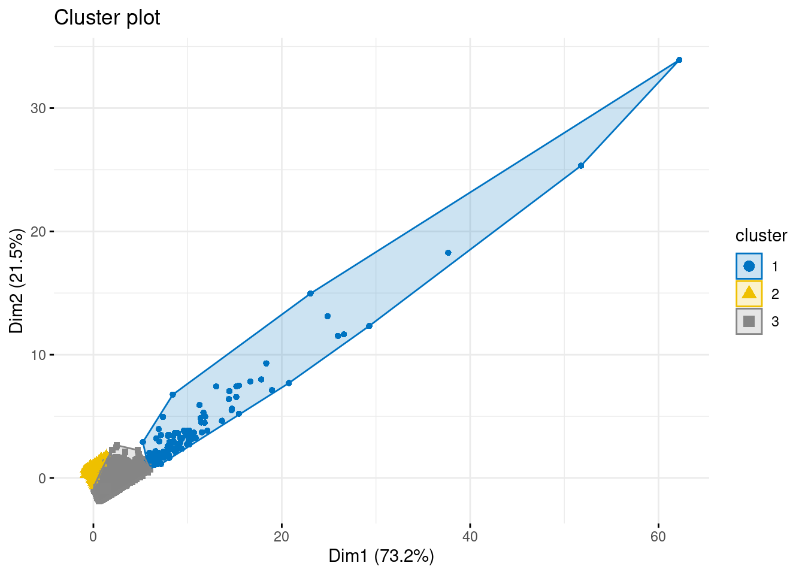
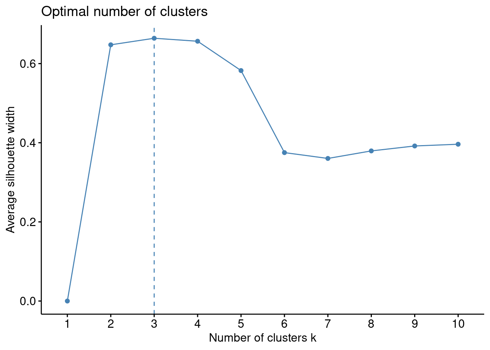
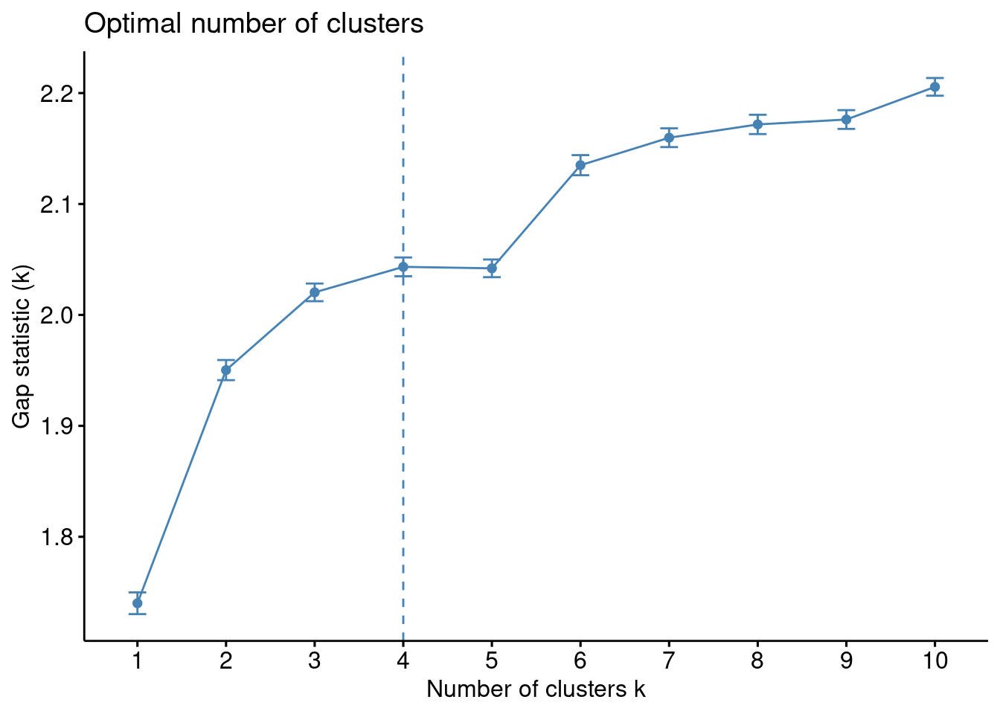

# Load packages
library(tidyverse)
library(lubridate)
# Load the CDNOW purchases dataset
purchases <- read_csv("data/cdnow_purchases.csv")10 Descriptive Analytics
Learning Goals
By the end of this chapter, students should be able to:
- Understand what descriptive analytics means in a business context and recognize its role as the foundation for more advanced approaches.
- Explain how RFM provides a simple rule-based approach to customer segmentation.
- Recognize the limitations of rule-based segmentation and why data-driven methods like K-means are useful.
- Preprocess and scale data appropriately for clustering using recipes.
- Apply K-means clustering to customer data, evaluate different choices of k, and visualize the results.
- Interpret and compare K-means clusters with RFM segments to draw actionable business insights.
10.1 What is Descriptive Analytics?
Descriptive analytics is the starting point of data analysis in business. It focuses on summarising past data to identify patterns and trends. Rather than predicting what will happen next or uncovering cause-and-effect relationships, descriptive analytics answers the question:
What happened?
In practice, descriptive analytics often takes the form of reports, dashboards, and summaries that help decision makers see what has occurred in their business. For example:
- A retailer might track sales by product category over the past month.
- A streaming service might analyse which genres were most watched last quarter.
- An airline might compare passenger loads across routes.
These analyses do not tell us why the patterns occurred, nor do they predict what will happen next. Instead, they give us a clear picture of the past, which is essential for any further analysis.
Descriptive vs Predictive vs Causal Analytics
- Descriptive analytics: Summarises historical data to show what happened.
- Predictive analytics: Uses models to estimate what is likely to happen next.
- Causal analytics: Identifies cause-and-effect relationships to answer what would happen if we made a change.
10.2 The Business Challenge
Descriptive analytics is especially important in customer analytics, where it helps us group customers by behaviour, spending, or engagement. But simply knowing what happened is not enough—businesses want to act on this information.
Suppose you are a marketing analyst working with data from the CDNOW Online Music Store, a retailer that sold CDs during the early years of e-commerce. The dataset you have contains detailed information on customers’ purchases between 1997 and 1998:
- Who bought (customer ID).
- When they bought (purchase dates).
- How much they spent (transaction amounts).
Your manager asks:
“Which customers should we target for our new loyalty campaign?”
This is a classic segmentation problem. Not all customers are equal: some shop frequently, some spend a lot, and others may be slipping away. Treating every customer the same wastes resources and misses opportunities.
To solve this problem, we will use descriptive analytics to summarise customer behaviour over time and identify meaningful groups. In this chapter, we will explore two approaches:
- RFM (Recency, Frequency, Monetary) — a simple, rule-based method that is easy to compute and interpret.
- K-means clustering — a data-driven method that uses algorithms to find patterns in behaviour that RFM might not pick up.
By comparing these approaches on the CDNOW data, you will see how descriptive analytics provides the foundation for identifying customer groups that can guide real marketing decisions.
What is Customer Segmentation?
Customer segmentation is the process of dividing a customer base into groups that share similar characteristics or behaviours. The goal is to treat customers differently depending on their value, needs, or potential, rather than applying a “one-size-fits-all” strategy.
In the case of the CDNOW Online Music Store, segmentation could mean:
- Identifying loyal repeat buyers who purchase many CDs over time.
- Spotting big spenders who buy fewer times but place large orders.
- Detecting at-risk customers who have not purchased recently.
Why Segment Customers?
Businesses segment customers to: - Allocate marketing resources more effectively. - Target promotions to groups most likely to respond. - Protect valuable customers from churning. - Identify growth opportunities in overlooked groups.
Without segmentation, every customer is treated the same—leading to wasted resources and missed opportunities.
Segmentation is a form of descriptive analytics: it summarises the data into interpretable groups that can guide marketing strategy. Once customers are segmented, a business can ask targeted questions such as:
- Which group should receive a loyalty discount?
- Which group is most at risk of churn?
- Which group generates the most revenue?
Segmentation vs. Personalisation
- Segmentation groups customers into categories (e.g., high-value vs. low-value).
- Personalisation tailors offers at the individual level.
Segmentation is usually the first step toward more personalised strategies.
Loading the R packages and Data
To get started, we need to load the R packages that will help us work with the CDNOW dataset. We will use the tidyverse for data wrangling and reading in the CSV file, lubridate for handling dates.
The purchases file contains transaction records for each customer. It includes four columns:
id: the customer identifier.date: the date of the purchase.cds: the number of CDs purchased in a transactionamt: the amount spent in that transaction.
We can quickly check the structure of the data:
glimpse(purchases)Rows: 69,659
Columns: 4
$ users_id <dbl> 1, 2, 2, 3, 3, 3, 3, 3, 3, 4, 4, 4, 4, 5, 5, 5, 5, 5, 5, 5, 5…
$ date <date> 1997-01-01, 1997-01-12, 1997-01-12, 1997-01-02, 1997-03-30, …
$ cds <dbl> 1, 1, 5, 2, 2, 2, 5, 4, 1, 2, 2, 1, 2, 2, 1, 3, 3, 3, 2, 2, 3…
$ amt <dbl> 11.77, 12.00, 77.00, 20.76, 20.76, 19.54, 57.45, 20.96, 16.99…Notice that the date variable has been recognized as a date. This means we can use it “as-is” when we will need to apply date transformations going forward.
10.3 Rule-Based Segmentation
One simple way to group customers is through rule-based segmentation. In this approach, analysts define a set of rules or thresholds that assign customers to different groups.
For example:
- A retailer might classify “VIP customers” as anyone who spends more than $500 per month.
- A subscription service might define “inactive customers” as those who have not logged in for 90 days.
The strengths of rule-based segmentation is that it is easy to explain and apply and interpretable by humans. Managers can set rules based on business intuition and communicate them without technical detail. The limitation is that the rules are often arbitrary, and customers just above or below a threshold may be very similar in reality.
Rule-Based vs. Data-Driven Segmentation
- Rule-based: Groups are defined by fixed cutoffs chosen by analysts or managers.
- Data-driven: Groups are discovered by algorithms that search for natural patterns in the data.
In customer analytics, one of the most widely used rule-based methods is RFM segmentation, which groups customers based on:
- Recency of their last purchase.
- Frequency of their purchases.
- Monetary value of their purchases.
Why RFM?
RFM is one of the oldest and most widely used customer segmentation methods in marketing.
- Recency, Frequency, Monetary measures are intuitive and easy to calculate.
- They often capture a large share of the variation in customer value.
- Many CRM and loyalty systems still rely on RFM as a starting point for segmentation.
Because of this, RFM is an ideal first step for learning about segmentation before moving on to data-driven methods like K-means.
Calculating the RFM metrics
Our transaction dataset has one row per purchase: a customer ID, the date of purchase, and the amount spent. To compute RFM measures, we first need to aggregate this data to the customer level because we are describing features of a customer’s interactions with the company rather then each individual transaction.
For each customer, we will calculate:
- Length of time since most recent purchase date (Recency)
- Number of purchases (Frequency)
- Total amount spent (Monetary)
The latter two of these metrics, Frequency and Monetary are much easier to calculate as they can be obtained from a group_by() and summarise() chain of commands. To find the length of time since most recent purchase date, we will need to do a bit more work. But, we will start by finding the date each customer most recently bought from the store:
customer_aggregates <-
purchases |>
group_by(users_id) |>
summarise(
last_purch_date = max(date),
frequency = n(),
monetary = sum(amt),
.groups = "drop"
)Next we need to compute recency, i.e. time since last purchase. Since the data was collected in 1997-1998, computing a metric relative to now, i.e. the year 2025, seems a bit silly. Let’s suppose we were asked to do the analysis on the 1st of July 1998. We’ll store that value in R for later:
# Set the analysis date
# note as_date is the tidyverse version of as.Date
analysis_date <- as_date("1998-07-01") Finally, we will compute recency. We will compute the number of months between the analysis date and the last purchase. To do this, first we compute the length of time between two dates with interval, and then convert that length into months:
customer_aggregates <-
customer_aggregates |>
mutate(
recency = interval(last_purch_date, analysis_date) %/% months(1),
) |>
select(-last_purch_date)These measures allow us to capture how fresh or established a customer’s relationship is with the business.
From Metrics to Segments
At this point, each customer has three measures, R, F and M:
glimpse(customer_aggregates)Rows: 23,570
Columns: 4
$ users_id <dbl> 1, 2, 3, 4, 5, 6, 7, 8, 9, 10, 11, 12, 13, 14, 15, 16, 17, 1…
$ frequency <int> 1, 2, 6, 4, 11, 1, 3, 8, 3, 1, 4, 1, 1, 1, 1, 4, 1, 1, 2, 2,…
$ monetary <dbl> 11.77, 89.00, 156.46, 100.50, 385.61, 20.99, 264.67, 197.66,…
$ recency <dbl> 18, 17, 1, 6, 5, 18, 3, 3, 0, 17, 4, 18, 18, 18, 18, 9, 18, …These numbers are continuous, which makes them hard to compare directly across customers. For example:
- Is a customer with a recency of 4 months “recent” or “not recent”?
- Is 12 purchases “frequent” or “average”?
To make these comparisons easier, we group customers into segments by splitting each measure into categories. A common approach is to use 5 segments (quintiles):
- 1 = lowest group (e.g., least recent, least frequent, lowest spenders).
- 5 = highest group (e.g., most recent, most frequent, biggest spenders).
Why 5 segments?
- Simple to interpret: a score from 1 to 5 for each metric.
- Balanced groups: quintiles divide customers so that each group has roughly 20% of the population.
- Flexible: fine-grained enough to capture variation, but not too detailed to overwhelm.
We will use the function ntile() to split customers into quintiles. Let’s do that:
rfm_data <-
customer_aggregates |>
mutate(
r_tile = ntile(recency, 5),
f_tile = ntile(frequency, 5),
m_tile = ntile(monetary, 5)
) Now let’s look at the output for r_tile. In particular let’s look at average recency per tile:
rfm_data |>
group_by(r_tile) |>
summarise(mean_r = mean(recency))# A tibble: 5 × 2
r_tile mean_r
<int> <dbl>
1 1 1.55
2 2 8.84
3 3 14.9
4 4 16.0
5 5 17.0 This is not what we wanted. Here the 5th quantile represents customers who on average interacted with the company approximately 17 months ago, the longest of all the quantiles. We wanted the 5th quantile to represent most recent, and the 1st quantile to be the longest. We’ll need to reverse that ranking. Reversing the ranking is unfortunately a bit more complex than we’d want.
How can we flip the numbers around?
- If a customer in tile 1 they should be in 5.
- If a customer in tile 5 they should be in 1.
- A customer in tile 3 should stay 3.
Mathematically, we can do this by subtracting the tile number from the maximum, and then adding 1 back:
\[ \text{new tile} = (\text{max tile value})−(\text{old tile value})+1 \]
This simple formula inverts the direction of the recency scores while keeping them within the same 1–5 scale. Let’s implement it:
rfm_data <-
rfm_data |>
mutate(
r_tile = max(r_tile) - r_tile + 1, # invert → 5 (recent) … 1 (stale)
)
# Check the direction now: higher r_tile should mean more recent (lower recency)
rfm_data |>
group_by(r_tile) |>
summarise(mean_r = mean(recency),
.groups = "drop"
)# A tibble: 5 × 2
r_tile mean_r
<dbl> <dbl>
1 1 17.0
2 2 16.0
3 3 14.9
4 4 8.84
5 5 1.55Great – we now have scores for each customer along each of our three dimensions.
We can do the same check for Frequency and Monetary value:
rfm_data |>
group_by(f_tile) |>
summarise(mean_f = mean(frequency),
.groups = "drop"
)# A tibble: 5 × 2
f_tile mean_f
<int> <dbl>
1 1 1
2 2 1
3 3 1.47
4 4 2.75
5 5 8.56And
rfm_data |>
group_by(m_tile) |>
summarise(mean_m = mean(monetary),
.groups = "drop"
)# A tibble: 5 × 2
m_tile mean_m
<int> <dbl>
1 1 12.4
2 2 24.0
3 3 44.4
4 4 90.1
5 5 359.
Tip
Remember: We reverse the score for Recency only (smaller months since last purchase is better). Frequency and Monetary already have the right direction: higher is better.
These summaries allow us to profile the tiles:
- Higher R-scores mean more recent customers.
- Higher F-scores mean more purchases.
- Higher M-scores mean bigger spenders.
Why Profile?
It’s not enough to compute RFM tiles—we need to check and interpret them. Profiling tells us whether the scores are behaving as expected and gives us a first look at how different types of customers compare.
Naming Customer Segments
So far, our RFM tiles tell us whether a customer is more recent, more frequent, or a bigger spender. But managers don’t want to hear that “Customer 1032 is R = 5, F = 4, M = 3.” They want clear, interpretable segments that can guide action.
To do this, we can combine the three RFM scores into rule-based categories and assign meaningful names.
For example:
- A customer with R = 5, F = 5, M = 5 is a Champion — very recent, very frequent, and high spending.
- A customer with R = 1, F = 1, M = 1 is Lost — they haven’t purchased in a long time, and even when they did, they didn’t buy much.
Over time, analysts and marketers have developed a set of standard RFM-based segments. These categories provide an easy way to translate the numbers into meaningful customer types. The idea is to take combinations of Recency, Frequency, and Monetary scores and give them descriptive names that managers can act on.
The table below shows ten common segments, their criteria, and a short description:
| Segment | R (Recency) | F (Frequency) | M (Monetary) | Description |
|---|---|---|---|---|
| Champions | 5 | 5 | 5 | Bought recently, buy often, and spend the most. |
| Potential Loyalist | 3–5 | 3–5 | 2–5 | Recent customers, spent a good amount, bought more than once. |
| Loyal Customers | 2–4 | 2–4 | 2–4 | Spend well, responsive to promotions, consistent buyers. |
| Promising | 3–4 | 1–3 | 3–5 | Recent shoppers but haven’t spent much. |
| New Customers | 4–5 | 1–3 | 1–5 | Bought recently but not often. |
| Can’t Lose Them | 1–2 | 3–4 | 4–5 | Previously big spenders and frequent, but not purchased for a long time. |
| At Risk | 1–2 | 2–5 | 4–5 | Used to spend a lot and buy often, but long inactive now. |
| Need Attention | 1–3 | 3–5 | 3–5 | Above average on most dimensions, could become loyal with the right push. |
| About To Sleep | 2–3 | 1–3 | 1–4 | Below average on recency, frequency, and monetary—at risk of being lost. |
| Lost | 1 | 1–5 | 1–5 | Bought a long time ago, low engagement and value. |
This table gives us a behavioural profile of each segment. For example:
- Champions should have low recency (they bought recently), high frequency, and high monetary.
- Lost customers should have very high recency (long inactive), low frequency, and low monetary.
- At Risk should look like once-valuable customers who have gone quiet.
By profiling, we check that our segmentation makes sense in practice before drawing business conclusions.
Names as Heuristics
These categories are heuristics developed in practice. They are not set in stone — companies often adapt the cutoffs or labels to fit their business context. For example, an online retailer might define Champions differently from a subscription service.
Next, we will translate this table into R code so that each customer in our dataset is assigned to one of these segments.
We can build a full segmentation scheme with case_when():
rfm_segmented <-
rfm_data |>
mutate(
segment = case_when(
# 1. Champions
r_tile == 5 & f_tile == 5 & m_tile == 5 ~ "Champions",
# 2. Potential Loyalist
r_tile %in% 3:5 & f_tile %in% 3:5 & m_tile %in% 2:5 ~ "Potential Loyalist",
# 3. Loyal Customers
r_tile %in% 2:4 & f_tile %in% 2:4 & m_tile %in% 2:4 ~ "Loyal Customers",
# 4. Promising
r_tile %in% 3:4 & f_tile %in% 1:3 & m_tile %in% 3:5 ~ "Promising",
# 5. New Customers
r_tile %in% 4:5 & f_tile %in% 1:3 & m_tile %in% 1:5 ~ "New Customers",
# 6. Can't Lose Them
r_tile %in% 1:2 & f_tile %in% 3:4 & m_tile %in% 4:5 ~ "Can't Lose Them",
# 7. At Risk
r_tile %in% 1:2 & f_tile %in% 2:5 & m_tile %in% 4:5 ~ "At Risk",
# 8. Need Attention
r_tile %in% 1:3 & f_tile %in% 3:5 & m_tile %in% 3:5 ~ "Need Attention",
# 9. About To Sleep
r_tile %in% 2:3 & f_tile %in% 1:3 & m_tile %in% 1:4 ~ "About To Sleep",
# 10. Lost
r_tile == 1 & f_tile %in% 1:5 & m_tile %in% 1:5 ~ "Lost",
# fallback
.default = "Unclassified"
)
)Now that each customer has been assigned to a named segment, we can explore what these groups look like. A first check is to see how many customers fall into each category:
rfm_segmented |>
count(segment, sort = TRUE)# A tibble: 11 × 2
segment n
<chr> <int>
1 Potential Loyalist 9678
2 Lost 4453
3 About To Sleep 3299
4 Loyal Customers 3194
5 Champions 2515
6 Can't Lose Them 182
7 Need Attention 112
8 At Risk 84
9 Promising 30
10 Unclassified 17
11 New Customers 6This shows us which groups dominate our customer base. In many datasets, we will see a large share of customers in “Lost” or “At Risk” segments, and only a small share in “Champions.”
Next, we can compute the average RFM values for each segment. This helps verify that the labels line up with the underlying behaviour:
rfm_segmented |>
group_by(segment) |>
summarise(
avg_recency = mean(recency),
avg_frequency = mean(frequency),
avg_monetary = mean(monetary),
n_customers = n(),
.groups = "drop"
) |>
arrange(desc(n_customers)) |>
kableExtra::kable(digits = 2)| segment | avg_recency | avg_frequency | avg_monetary | n_customers |
|---|---|---|---|---|
| Potential Loyalist | 8.96 | 3.09 | 103.87 | 9678 |
| Lost | 16.95 | 1.01 | 30.00 | 4453 |
| About To Sleep | 15.57 | 1.00 | 15.24 | 3299 |
| Loyal Customers | 15.80 | 1.17 | 40.60 | 3194 |
| Champions | 1.30 | 10.88 | 447.90 | 2515 |
| Can’t Lose Them | 16.63 | 2.26 | 159.09 | 182 |
| Need Attention | 16.96 | 2.14 | 44.50 | 112 |
| At Risk | 16.05 | 1.76 | 180.98 | 84 |
| Promising | 15.00 | 1.00 | 121.35 | 30 |
| Unclassified | 14.35 | 1.47 | 129.82 | 17 |
| New Customers | 7.83 | 2.00 | 13.17 | 6 |
5 min
Let’s bring these segment results back to the original business questions we had:
- Which segment is most valuable?
- If you were running a loyalty campaign, which groups would you target first?
- Which groups might not be worth investing in?
Solution
1. Which segment is most valuable? - Typically, the Champions segment is the most valuable. - They buy recently, buy often, and spend the most. - Even if the group is relatively small, they drive a disproportionate share of revenue.
2. If you were running a loyalty campaign, which groups would you target first? - Start with Champions to keep them engaged and feeling rewarded. - Next, look at Potential Loyalists and Loyal Customers — they already show good behaviour and can be nurtured into long-term, high-value relationships. - At Risk customers are also candidates: a well-designed campaign could bring them back before they are lost completely.
3. Which groups might not be worth investing in? - Lost customers: if someone hasn’t purchased in a very long time, the cost of reactivation may outweigh the benefits. - Promising or About to Sleep customers: these are lower-value segments where heavy marketing investment may not deliver strong returns. - For these groups, a light-touch or automated approach (e.g., generic email offers) is usually more efficient.
10.4 Data-Driven Segmentation
Going Beyond Rule-Based Segmentation
Up to this point, we have grouped customers using RFM segmentation with rules defined by us as modellers. This approach gave us a clear structure: we defined Recency, Frequency, and Monetary measures, divided customers into tiles, and then named the resulting segments. It is simple, intuitive, and widely used in practice.
But there are some important limitations:
- The cutoffs we used for tiles are somewhat arbitrary.
- Customers who are very similar might end up in different groups because they fall on opposite sides of a threshold.
- The rule-based segments we created reflect business intuition, but they may not capture the natural patterns in the data.
This motivates our next step: moving to a data-driven segmentation method. Instead of us setting the rules, we will let an algorithm search for groups of customers that are similar to one another and different from others. The method we will use is called K-means clustering.
To do this, we will go through three main steps:
Put variables on the same scale K-means compares customers using distance. If we don’t rescale, variables with large numbers (like total spending) will dominate those with smaller numbers (like recency in months).
Run the clustering algorithm We choose a number of clusters (k), and K-means assigns each customer to the group with the closest “center.” This step groups customers by similarity across our Recency, Frequency, and Monetary measures.
Decide how many clusters make sense Choosing k is part of the analysis. We’ll test different values and use diagnostics to see which number of clusters best describes the data.
Our purpose here is not to replace RFM but to compare approaches:
- RFM shows how analysts can create interpretable, rule-based groups.
- K-means shows how algorithms can discover structure we might miss.
Next, we will begin by preparing the data so that K-means treats each RFM measure fairly.
What is an Algorithm?
In everyday life, people often use “algorithm” to mean “some mysterious computer program.” In fact, the idea is much simpler.
An algorithm is just a step-by-step procedure for solving a problem. - A cooking recipe is an algorithm for preparing a dish. - Long division is an algorithm for dividing numbers. - K-means is an algorithm for grouping customers into clusters.
Algorithms can be done by hand (slowly!) or by computer (very quickly). The power of data analytics comes from running these algorithms at scale.
RFM as a Human Algorithm
When we built RFM segments, we were already following an algorithm — a fixed set of steps to reach a result:
- Calculate Recency, Frequency, and Monetary values for each customer.
- Split each measure into tiles (1–5).
- Apply rules to assign customers to named segments.
This is a rule-based algorithm: the steps were designed by us as analysts.
K-means is different in that it is a data-driven algorithm: instead of us writing the rules, the computer searches for patterns in the data to define the groups.
Preparing Data for Clustering
Before we jump into running K-means, we need to stop and think about the data we are giving to the algorithm.
K-means works by measuring the distance between customers in terms of their features (here: Recency, Frequency, Monetary). This means that the scale of each variable matters:
- Recency is measured in months.
- Frequency is measured as a count of purchases.
- Monetary is measured in dollars spent.
If we feed these raw values into K-means, the algorithm will be dominated by whichever variable has the largest scale. For example, if spending runs into the hundreds while recency is only a few months, the clusters will mostly reflect differences in spending.
Let’s check the ranges of our three measures:
rfm_data |>
summarise(
min_recency = min(recency),
max_recency = max(recency),
min_frequency = min(frequency),
max_frequency = max(frequency),
min_monetary = min(monetary),
max_monetary = max(monetary)
) |>
pivot_longer(
everything(),
names_to = c("stat", "variable"),
names_sep = "_"
) |>
pivot_wider(
names_from = stat,
values_from = value
)# A tibble: 3 × 3
variable min max
<chr> <dbl> <dbl>
1 recency 0 18
2 frequency 1 217
3 monetary 0 13991.This shows us the smallest and largest values for each variable.
- Recency ranges from 0 to 18 months.
- Frequency ranges from 1 to 217 purchases.
- Monetary ranges from a zero dollars to several thousand dollars.
Clearly, these are on very different scales. If we run K-means on these raw numbers, the algorithm will mostly detect differences in monetary value, because that variable spans thousands, while barely noticing differences in recency or frequency.
Potential Pitfall: Scale matters
Clustering is a distance-based method. Variables with larger numeric ranges will dominate the distance calculations, making smaller-range variables nearly irrelevant.
To avoid the issues due to different scales, we standardise our variables so that each has:
- Mean = 0
- Standard deviation = 1
This transformation makes Recency, Frequency, and Monetary comparable in how much they can influence the clustering.
Scaling and Z-scores
When we standardise a variable, we are turning it into a z-score. This means we subtract the mean and divide by the standard deviation:
\[ z = \frac{x - \text{mean}(x)}{\text{sd}(x)} \]
- A value of 0 means the observation is right at the average.
- Positive values mean it is above average.
- Negative values mean it is below average.
Why does this matter for clustering? K-means groups customers by calculating distances between them. If one variable has a very large numeric range (say, spending in the thousands), and another has a smaller range (say, recency in months), the large-range variable will dominate the distance calculation.
By converting all variables to z-scores, we: - Remove differences in scale (months, counts, dollars). - Put them on a common yardstick where 1 unit always means “1 standard deviation from the mean.” - Ensure that each measure contributes equally to the distance calculation, so clustering reflects all three dimensions of customer behaviour, not just the one with the largest numbers.
n-Tiles vs. Scaling
Earlier, when we built RFM segments, we used n-tiles (quintiles) to rank customers from 1 to 5 on each measure. This was another way of handling differences in scale:
- Instead of comparing raw values (e.g., dollars vs. months), we compared relative positions within the distribution.
- A customer in tile 5 for Recency is in the top 20% most recent purchasers, regardless of whether that means 2 months or 10 days.
Scaling with z-scores serves a similar purpose: - Both methods transform raw variables into a form where they can be compared more directly. - The key difference is that tiles rank customers relative to each other, while z-scores measure distance from the mean in standard deviation units.
This is why scaling is essential for clustering: it keeps the distances meaningful across all variables, rather than just their ranks.
Scaling Variables by Hand
Let’s start small by scaling just one variable: monetary value. Recall how to calculate the mean and standard deviation:
rfm_data |>
summarise(
mean_m = mean(monetary),
sd_m = sd(monetary)
)# A tibble: 1 × 2
mean_m sd_m
<dbl> <dbl>
1 106. 241.We can use these summary statistics to compute a scaled measure for monetary for all customers in the data:
rfm_data |>
mutate(monetary_scaled = (monetary - mean(monetary)) / sd(monetary)) |>
select(monetary, monetary_scaled) |>
head(10)# A tibble: 10 × 2
monetary monetary_scaled
<dbl> <dbl>
1 11.8 -0.391
2 89 -0.0709
3 156. 0.209
4 101. -0.0232
5 386. 1.16
6 21.0 -0.353
7 265. 0.658
8 198. 0.380
9 95.8 -0.0425
10 39.3 -0.277 Scaling Variables with recipes
Doing this for one variable makes the idea of scaling clear, but manually calculating across what could be many variables is tedious. And we know that when we are manually writing tedious code with the tidyverse, we are probably missing a more efficient and reproducible approach.
This is where the recipes package comes in. Recipes let us define a set of preprocessing steps — like scaling — that can be applied consistently across multiple variables. The big advantage is that the recipe keeps track of how the data was transformed, making the process transparent and easy to reproduce.
We start by using the recipe function to write a set of steps we want to perform:
library(recipes)
Attaching package: 'recipes'The following object is masked from 'package:stringr':
fixedThe following object is masked from 'package:stats':
steprfm_rec <-
recipe(~ recency + frequency + monetary,
data = rfm_data) |>
step_normalize(all_numeric_predictors())Here we created a simple preprocessing plan, i.e. a recipe, that tells R which variables to prepare and how. In recipe(~ recency + frequency + monetary, data = rfm), the tilde, ~, is the formula separator: the left side is for something you want to predict (an outcome) and the right side lists the input variables. When clustering, there’s no outcome variable in the data that we are trying to predict — we’re just grouping customers—so we leave the left side empty and list our inputs on the right: recency, frequency, and monetary. We then pipe into the next step step_normalize(all_numeric_predictors()) which standardises each of those numeric variables (turn them into z-scores). If we then look at the object:
rfm_rec── Recipe ──────────────────────────────────────────────────────────────────────── Inputs Number of variables by rolepredictor: 3── Operations • Centering and scaling for: all_numeric_predictors()When we printed rfm_rec, you may have noticed something curious: the data itself wasn’t transformed yet. Instead, R showed us a blueprint of what will happen — which variables are included (recency, frequency, monetary), the role they play (all as predictors, since there’s no outcome in clustering), and the step that will be applied (step_normalize()). This design is intentional: a recipe describes the instructions, but it does not execute them right away.
To actually make the transformations, we need to prep the recipe. Think of this as training the recipe on our data, or, more informally, as preparing the ingredients before cooking. For the scaling we want to do, prep() calculates the mean and standard deviation of each variable so that it knows exactly how to convert them into z-scores.
rfm_prepped <- prep(rfm_rec)
rfm_prepped── Recipe ──────────────────────────────────────────────────────────────────────── Inputs Number of variables by rolepredictor: 3── Training information Training data contained 23570 data points and no incomplete rows.── Operations • Centering and scaling for: recency, frequency, monetary | TrainedThe output is still a recipe object, but now it has all the information required to perform the transformation. the output looks similar to the earlier recipe, but with an important difference: it now shows that the step_normalize() step has been trained. Behind the scenes, R has stored the mean and standard deviation of each variable (recency, frequency, and monetary) based on the data we provided. The result is still a recipe object, but now it contains all the information needed to perform the transformation. Intuitively, this is the same as weighing out all the ingredients before you start cooking — everything is ready, but the meal hasn’t been served yet.
Finally, we use bake to apply the recipe to the data. If prep() was about preparing the ingredients, then bake() is the step where we actually cook the dish and put it on the table. bake() takes the prepared recipe and returns a new data frame with the standardized variables ready to use.
rfm_scaled <- bake(rfm_prepped, new_data = NULL)
head(rfm_scaled)# A tibble: 6 × 3
recency frequency monetary
<dbl> <dbl> <dbl>
1 1.07 -0.413 -0.391
2 0.901 -0.202 -0.0709
3 -1.79 0.643 0.209
4 -0.947 0.221 -0.0232
5 -1.12 1.70 1.16
6 1.07 -0.413 -0.353 By using new_data = NULL, we tell R to apply the recipe to the same data that was used when we prepped it. The result is a data frame where recency, frequency, and monetary have all been transformed into z-scores — each with mean zero and standard deviation one. Let’s check that our scaling worked as intended. If the recipe did its job, each of our variables — recency, frequency, and monetary — should now have a mean of zero and a standard deviation of one.
rfm_scaled |>
summarise(
across(everything(),
list(mean = mean, sd = sd)) |>
pivot_longer(
cols = everything(),
names_to = c("variable", ".value"),
names_sep = "_"
)
) |>
kableExtra::kable(digits = 2)Warning: Returning more (or less) than 1 row per `summarise()` group was deprecated in
dplyr 1.1.0.
ℹ Please use `reframe()` instead.
ℹ When switching from `summarise()` to `reframe()`, remember that `reframe()`
always returns an ungrouped data frame and adjust accordingly.| variable | mean | sd |
|---|---|---|
| recency | 0 | 1 |
| frequency | 0 | 1 |
| monetary | 0 | 1 |
Same Recipe, New Data?
If you later want to apply the same recipe to a new dataset (e.g., fresh customers with the same variables), you can supply use the same code as above with new_data = rfm_data instead of NULL. This makes recipes especially powerful for production settings, where the same preprocessing steps need to be applied consistently over time.
Clustering with K-means
Now that our variables are standardized, we are ready to group customers using K-means clustering. This is one of the most widely used clustering methods in business analytics because it is simple, fast, and effective.
The basic idea is to divide customers into groups where those in the same group are more similar to each other (in terms of recency, frequency, and monetary value) than to customers in other groups. Instead of setting rules ourselves — as we did with RFM quintiles — we let the algorithm discover the natural groupings in the data.
At a high level, the process works like this:
Step 1: Decide on (k). We choose how many clusters we want the algorithm to find. Think of this as telling it, “please uncover (k) different types of customers.”
Step 2: Assign customers to clusters. Each customer is assigned to the cluster with the nearest center point (called a centroid). A centroid is simply the average customer in the cluster. It is calculated by taking the average recency, the average frequency, and the average monetary value of all customers currently in the group. For example, if three customers had frequencies of 2, 4, and 6 purchases, the cluster’s frequency centroid would be ((2+4+6)/3 = 4). In this way, the centroid represents the “typical customer” in that group.
Step 3: Update the centroids. Once customers are assigned, the centroid of each cluster is recalculated. This makes the center points shift toward where most of the customers really are.
Step 4: Reassign customers. Customers are then reassigned to whichever centroid they are now closest to.
This cycle of recalculating averages and reassigning customers repeats until the groups stop changing. At that point, the clustering is considered stable.
Clustering as a Networking Event for Your Data
You can think of this process like a networking event. At first, people cluster around randomly chosen “representatives.” As the crowd shifts, the representatives change to reflect the average person in their group. People keep moving until they find themselves in the group that feels like the best fit — and then the groups stop changing.
Let’s see how this works in practice by running K-means on our CDNOW dataset with (k = 3) clusters.
set.seed(123)
kmeans_3 <- kmeans(rfm_scaled, centers = 3)
Why set a seed?
K-means starts by placing centroids in random positions before it begins the averaging-and-reassigning process. Because of this, you can get slightly different results each time you run the algorithm.
By setting a random seed (e.g., set.seed(123)), we make the results reproducible — so that if you (or your manager, or your professor) rerun the code, you will get the same clusters. This is especially important in reporting, where consistency matters.
The Raw K-means Output
If you print the kmeans() result directly, the output can look a little overwhelming:
kmeans_3K-means clustering with 3 clusters of sizes 150, 16287, 7133
Cluster means:
recency frequency monetary
1 -1.7662623 7.0567254 7.8076613
2 0.6198065 -0.3276554 -0.2598818
3 -1.3780806 0.5997497 0.4292088
Clustering vector:
[1] 2 2 3 3 3 2 3 3 3 2 3 2 2 2 2 3 2 2 2 2 2 2 2 3 3 2 2 2 3 2 3 3 1 2 2 2
[37] 3 2 3 3 2 2 3 2 2 3 3 3 2 2 3 3 3 2 2 3 2 2 2 2 2 3 3 3 3 2 2 2 2 2 2 2
[73] 2 2 2 2 2 3 2 2 3 3 3 2 2 2 3 2 3 2 2 2 2 2 1 1 3 2 3 3 2 3 3 2 2 3 2 2
[109] 2 2 3 2 3 3 2 2 3 2 2 3 2 2 2 3 3 3 2 2 2 3 2 3 3 3 2 3 2 2 2 2 3 3 2 2
[145] 3 2 3 3 2 2 2 3 2 3 2 2 2 2 2 2 3 2 2 3 3 3 3 2 2 3 2 2 3 2 2 2 3 2 3 2
[181] 2 3 2 3 3 2 2 2 2 2 2 3 2 2 3 2 2 2 2 2 3 2 2 2 3 2 3 3 2 3 2 2 2 3 2 2
[217] 3 2 2 2 2 3 2 2 2 3 3 3 3 2 2 2 2 2 2 2 2 3 2 2 3 2 2 1 3 3 3 2 2 2 2 3
[253] 2 2 2 2 3 2 2 2 2 2 2 2 2 2 2 2 2 2 2 2 2 2 2 3 3 2 2 2 2 2 2 2 2 2 2 2
[289] 2 2 2 3 3 3 3 2 2 2 3 3 3 2 2 2 3 2 2 2 2 2 2 3 1 2 2 2 3 3 2 2 2 2 3 2
[325] 2 2 2 3 3 2 2 2 2 2 2 2 3 2 3 2 2 2 3 3 3 2 2 2 2 2 2 2 2 2 2 2 2 3 2 3
[361] 3 2 2 2 3 2 2 3 2 3 3 2 3 3 2 3 2 2 2 2 2 2 2 2 2 2 3 2 3 2 2 2 2 2 2 3
[397] 2 1 2 3 2 2 2 3 2 3 2 2 2 3 1 3 2 2 2 2 3 2 2 2 2 2 2 3 2 2 2 2 3 3 3 2
[433] 3 2 2 2 2 2 2 2 3 2 2 2 3 3 2 2 2 2 2 2 2 3 2 3 2 3 2 2 3 2 2 3 2 2 2 2
[469] 2 2 2 2 2 3 2 2 2 2 2 2 2 2 2 3 3 2 2 3 2 3 2 3 2 2 2 2 2 2 1 2 2 2 2 3
[505] 3 2 2 2 2 2 2 2 2 2 2 2 2 2 3 2 2 2 3 2 2 2 2 2 2 2 2 2 2 2 2 2 2 2 2 2
[541] 2 2 2 2 3 3 3 3 2 2 2 2 2 2 2 2 2 2 3 2 3 2 2 3 2 3 3 3 3 3 2 3 3 2 2 2
[577] 2 2 2 2 2 3 3 2 3 1 3 2 3 3 3 2 3 2 3 2 2 3 2 2 2 3 2 2 2 3 2 3 3 3 2 2
[613] 2 3 2 3 2 2 1 2 2 2 2 3 2 3 2 2 3 2 3 2 3 2 3 2 2 3 2 2 2 2 3 2 3 3 2 2
[649] 3 2 2 2 3 2 2 3 2 2 3 2 2 3 3 2 2 2 2 2 2 3 3 2 2 3 2 2 2 2 2 2 2 2 2 2
[685] 2 2 3 2 2 2 3 2 2 2 2 2 2 3 3 2 2 3 2 3 3 2 2 2 2 1 3 3 2 2 2 2 3 3 2 2
[721] 2 3 2 2 2 2 2 2 3 3 3 3 2 2 3 2 3 2 2 2 2 2 2 3 2 3 2 2 2 2 2 2 3 2 2 2
[757] 2 1 3 3 2 2 2 3 3 3 3 2 2 2 2 3 3 2 2 3 2 3 2 3 2 2 3 3 2 2 2 2 3 3 2 2
[793] 2 2 2 2 3 2 3 3 2 2 2 3 3 3 2 3 2 2 3 2 2 2 2 2 2 2 2 3 3 2 2 3 3 2 3 2
[829] 2 3 2 2 2 2 2 3 3 2 2 3 2 2 3 2 3 3 2 3 3 3 2 2 2 2 2 3 2 2 2 3 3 2 2 2
[865] 2 2 2 2 2 3 3 2 3 3 2 2 2 2 2 2 3 2 2 2 2 2 3 2 2 2 3 3 2 3 2 3 2 2 2 2
[901] 3 2 2 2 2 2 2 2 2 3 2 2 2 2 3 2 2 3 2 3 2 2 3 2 2 3 3 2 2 2 3 3 2 2 2 2
[937] 2 3 2 2 3 3 2 2 3 3 2 2 2 2 3 2 2 2 2 2 2 2 2 2 2 3 2 2 3 2 2 3 2 2 2 2
[973] 2 2 2 2 2 2 3 3 3 2 2 2 3 2 2 3 2 2 3 3 3 3 2 2 3 3 3 2 2 3 2 3 2 2 2 2
[1009] 2 2 2 2 2 2 2 2 2 3 2 2 2 2 2 2 3 2 2 2 2 2 2 3 2 2 2 2 3 2 3 2 3 2 2 2
[1045] 3 2 2 2 2 2 2 2 3 2 2 2 2 2 2 2 2 2 2 2 2 3 2 3 2 2 3 2 2 2 3 2 1 3 2 2
[1081] 2 3 3 3 3 3 3 2 3 2 2 3 2 3 2 2 2 2 3 2 2 2 2 3 2 2 2 3 2 2 3 2 2 3 2 2
[1117] 2 2 2 3 3 2 2 2 2 2 2 2 2 2 2 3 3 2 2 2 3 2 2 2 2 2 2 2 2 2 2 3 2 2 2 2
[1153] 3 2 3 2 3 2 2 2 3 2 2 2 2 2 3 2 2 3 3 2 2 2 2 3 2 2 2 3 2 2 3 2 3 2 2 2
[1189] 2 3 2 3 2 2 3 3 2 2 2 2 3 2 2 2 3 2 2 3 2 2 2 3 3 2 2 2 2 2 2 2 3 2 2 2
[1225] 2 3 2 3 3 2 2 3 2 2 2 3 3 2 2 2 3 2 2 3 2 2 3 3 2 3 3 2 2 3 2 2 3 3 2 3
[1261] 2 2 3 2 2 2 2 3 2 2 2 2 2 2 2 2 2 2 2 2 2 2 2 3 2 2 2 2 3 3 2 3 3 3 2 3
[1297] 2 2 2 2 3 2 2 2 2 2 2 2 3 3 2 2 3 3 2 3 2 2 2 2 2 2 2 2 2 2 2 2 3 2 2 2
[1333] 3 2 2 2 2 2 2 2 3 3 3 3 2 3 2 2 3 2 2 2 2 2 2 3 2 3 2 2 2 3 2 2 2 2 2 2
[1369] 2 3 2 2 2 2 3 3 2 2 2 2 2 3 2 2 3 3 2 2 2 2 2 2 3 2 2 3 2 3 2 3 2 2 2 2
[1405] 2 3 2 2 3 3 3 3 3 3 2 3 3 2 2 2 3 2 3 2 2 2 3 2 2 2 2 2 2 2 3 2 2 2 3 2
[1441] 2 2 2 3 3 2 3 3 2 3 2 2 2 2 2 2 2 3 2 3 2 2 2 3 2 2 2 3 2 3 3 2 3 3 2 2
[1477] 2 2 2 2 2 2 2 2 2 2 2 3 3 3 2 2 2 3 2 3 2 2 2 3 3 2 2 2 2 3 2 2 3 3 2 2
[1513] 2 3 2 3 2 2 2 2 2 2 3 2 3 2 2 3 2 2 2 2 3 2 2 2 2 2 2 2 2 3 2 2 2 2 2 2
[1549] 2 3 3 2 2 2 2 3 2 2 2 2 3 2 3 3 2 3 2 2 2 2 2 3 3 2 2 2 3 2 2 3 3 3 3 3
[1585] 3 3 2 2 3 3 2 2 3 3 2 3 2 3 2 3 3 3 3 2 2 3 3 2 3 3 2 2 3 2 2 3 2 2 2 2
[1621] 2 2 3 2 2 3 2 2 2 2 2 3 3 2 3 2 3 3 2 2 2 3 2 3 3 3 3 2 3 2 2 2 2 3 2 3
[1657] 2 3 2 2 3 2 2 2 2 2 2 3 3 2 2 3 3 2 3 2 2 2 2 2 2 2 2 3 2 3 3 2 3 3 2 2
[1693] 2 2 3 3 3 2 3 3 2 2 3 2 3 3 3 2 2 2 3 2 3 2 2 3 2 2 3 3 2 1 2 3 3 3 2 3
[1729] 2 2 2 3 2 2 2 3 2 3 2 2 3 2 2 2 3 2 2 2 2 2 2 3 2 2 3 2 3 2 3 1 2 2 2 3
[1765] 3 2 2 3 3 2 2 3 3 2 2 2 2 2 2 3 2 2 2 2 3 2 2 2 2 3 3 2 3 1 2 3 2 2 3 2
[1801] 2 3 2 2 3 2 3 2 2 2 2 2 2 2 2 2 3 2 2 2 2 2 2 2 3 2 2 2 2 2 2 2 3 3 2 3
[1837] 2 2 2 2 2 3 2 2 3 3 2 1 2 3 3 2 2 3 2 2 2 2 2 2 2 2 3 3 2 2 3 1 3 2 3 2
[1873] 2 3 2 2 3 2 2 2 3 3 3 2 2 2 2 2 2 1 2 2 3 2 2 2 3 2 2 2 2 2 3 2 2 2 3 2
[1909] 3 2 2 2 2 2 2 3 2 3 3 3 2 2 2 3 2 2 2 2 2 2 3 2 2 2 2 2 3 2 2 2 2 2 2 2
[1945] 2 2 2 2 2 2 3 2 2 2 2 2 2 2 2 2 2 2 2 2 1 2 2 2 2 3 2 2 3 2 2 2 3 2 2 1
[1981] 3 2 3 2 2 2 2 2 2 2 3 2 3 2 2 3 3 2 3 2 3 2 3 2 2 2 2 2 2 2 2 2 3 2 2 3
[2017] 2 2 2 2 3 3 2 2 2 2 3 2 2 2 2 2 3 3 2 2 2 2 2 2 2 2 2 3 2 3 2 3 2 2 2 2
[2053] 3 2 2 3 2 3 2 2 3 2 2 3 2 1 3 2 3 2 2 3 2 2 2 2 2 3 2 2 3 2 2 3 2 2 2 2
[2089] 2 3 2 3 2 2 2 2 2 2 3 2 3 3 2 2 2 3 3 3 2 2 2 2 3 2 3 2 2 2 2 2 2 2 2 3
[2125] 3 2 2 2 2 2 2 2 2 2 3 2 2 2 2 2 2 2 2 2 2 3 3 3 2 2 2 2 3 2 2 2 2 3 3 2
[2161] 2 2 3 3 2 3 2 2 2 2 3 2 3 2 2 2 3 2 2 2 2 2 3 2 2 2 2 3 3 3 2 2 2 3 2 2
[2197] 2 2 2 2 2 2 2 2 3 2 2 2 2 3 2 3 2 2 3 2 3 2 3 2 2 3 3 2 2 2 2 3 3 2 2 2
[2233] 2 2 2 2 2 3 2 3 2 3 2 2 2 2 3 2 2 3 2 2 3 2 2 3 2 2 2 3 2 2 2 3 2 3 2 2
[2269] 2 2 2 2 2 2 3 2 2 2 2 3 2 3 2 2 2 3 2 3 2 3 2 2 2 2 3 3 2 2 3 2 2 2 2 3
[2305] 3 2 3 3 3 2 3 2 2 2 3 3 3 2 2 2 2 3 2 2 2 2 2 2 2 2 2 3 3 2 2 2 2 2 2 2
[2341] 2 3 2 2 2 2 2 2 3 2 3 2 2 2 3 3 3 3 3 3 2 2 2 3 2 3 2 3 2 3 2 2 2 3 2 2
[2377] 3 3 2 2 2 2 2 2 2 2 2 1 3 3 2 2 3 3 2 2 2 2 2 3 2 2 2 2 3 2 2 2 2 2 2 3
[2413] 2 2 2 2 2 2 3 3 2 2 2 2 2 2 3 2 3 3 2 3 2 3 2 2 2 3 2 2 2 2 3 2 3 2 3 2
[2449] 3 3 2 2 2 2 3 3 3 2 2 3 2 2 2 2 2 3 2 2 2 3 2 2 2 2 3 2 2 2 3 2 2 2 2 1
[2485] 2 2 2 2 3 2 2 2 2 2 2 2 2 2 3 3 3 3 2 2 2 2 2 2 3 2 2 2 2 2 2 3 2 2 2 3
[2521] 2 2 2 3 3 3 2 2 2 2 2 2 3 3 2 3 2 2 2 2 2 3 2 2 3 2 3 2 3 2 2 2 2 3 2 2
[2557] 3 2 2 3 3 2 2 1 2 2 3 2 2 2 2 2 2 2 2 2 2 3 2 2 2 2 3 3 2 2 2 3 2 2 3 2
[2593] 2 3 3 2 3 3 3 2 3 2 3 3 2 2 3 2 2 2 2 3 2 2 3 2 3 2 2 3 2 2 3 2 2 3 2 2
[2629] 3 3 2 2 2 2 2 3 3 3 3 2 2 2 2 3 2 2 3 2 2 2 3 2 3 2 2 2 2 2 2 3 3 2 3 1
[2665] 2 3 2 2 2 2 3 2 2 2 3 2 2 2 2 2 2 2 3 2 2 2 2 2 2 2 2 3 2 2 2 2 2 2 2 2
[2701] 2 2 2 2 2 2 2 2 2 2 2 3 2 3 2 2 3 2 2 2 3 2 2 3 2 2 2 2 3 2 2 3 2 2 2 2
[2737] 3 3 2 2 2 2 2 3 3 2 3 3 2 2 2 2 3 2 3 2 2 2 3 3 3 3 2 2 2 2 3 2 3 3 2 2
[2773] 2 2 2 2 2 3 2 2 2 2 2 3 2 2 2 2 2 2 3 3 2 2 2 2 2 3 2 2 2 2 2 2 2 2 2 2
[2809] 2 3 3 2 2 2 2 2 2 3 2 3 2 3 2 2 2 2 2 2 3 3 2 2 3 2 3 2 2 2 2 2 3 3 2 3
[2845] 2 2 2 2 3 3 3 2 3 2 3 3 2 2 2 2 2 2 2 2 2 2 3 2 3 3 3 2 3 3 2 3 2 2 2 2
[2881] 3 3 3 2 2 2 2 2 2 2 2 2 2 2 2 2 2 2 3 3 2 2 3 2 2 2 2 1 3 2 2 3 2 2 2 2
[2917] 2 2 2 2 3 2 2 2 2 2 3 3 2 3 3 2 2 2 2 2 2 2 2 2 3 3 2 2 3 2 2 2 2 2 2 3
[2953] 3 3 3 2 3 2 2 2 2 2 2 3 3 3 2 2 2 2 3 3 3 2 3 3 2 2 3 2 2 2 2 2 2 3 3 3
[2989] 2 2 2 2 3 2 2 2 2 3 3 2 2 3 2 2 2 2 2 2 3 2 3 3 2 3 3 3 2 3 2 3 2 2 2 2
[3025] 2 3 2 3 2 2 2 2 2 2 3 3 2 2 2 2 3 2 2 3 2 2 2 2 1 2 3 2 3 2 2 2 2 2 2 2
[3061] 2 3 2 3 3 2 2 2 2 2 2 2 3 3 2 2 2 2 2 2 2 3 2 3 2 2 2 2 3 3 3 3 2 2 3 2
[3097] 2 2 2 2 2 2 2 2 2 2 2 2 2 3 2 2 2 3 2 2 2 3 2 3 2 2 2 3 3 2 3 3 2 3 3 2
[3133] 3 2 2 2 2 3 3 3 3 3 2 2 3 3 2 3 2 2 2 2 2 3 2 3 3 2 3 2 2 2 3 2 3 2 2 2
[3169] 2 2 2 2 2 2 2 3 2 2 2 3 3 3 2 3 2 2 2 2 3 2 3 3 3 2 1 2 3 3 2 2 2 2 3 2
[3205] 3 3 2 2 2 3 3 2 2 3 2 3 2 2 2 2 2 2 2 2 3 2 2 2 3 3 2 2 3 2 2 2 2 3 3 2
[3241] 2 2 3 2 2 2 2 2 3 3 2 2 2 2 2 3 2 3 3 2 2 2 2 2 2 2 2 2 2 3 2 2 3 2 2 2
[3277] 2 2 2 2 2 2 3 2 3 2 2 2 3 3 3 2 2 2 2 2 2 3 2 2 2 2 3 2 2 3 2 2 2 2 3 2
[3313] 3 3 3 3 2 3 3 2 2 2 2 3 3 2 2 3 2 2 3 3 2 3 3 2 3 3 3 2 2 2 2 2 3 2 2 2
[3349] 2 3 2 2 2 2 2 3 2 2 2 2 2 3 2 2 3 2 3 2 2 3 2 2 2 2 2 2 3 2 2 3 2 2 2 3
[3385] 3 2 2 2 2 2 2 2 2 3 3 2 2 2 2 3 2 3 2 2 2 3 3 2 3 2 2 3 3 2 3 1 2 2 3 2
[3421] 3 2 3 3 2 2 2 3 2 3 2 3 2 2 2 2 2 2 2 2 2 3 3 2 3 2 2 2 2 2 3 3 3 2 3 2
[3457] 2 3 3 2 3 3 2 2 2 2 2 2 3 2 3 2 2 2 3 3 2 2 3 3 3 2 2 2 2 3 3 2 2 2 3 2
[3493] 2 2 3 3 3 3 2 3 1 2 2 2 2 1 2 2 3 2 2 2 2 2 3 2 3 2 2 2 2 2 3 2 2 2 2 3
[3529] 2 2 2 2 3 2 3 3 3 3 2 3 2 2 2 2 2 2 2 3 2 3 3 2 2 2 3 2 2 3 3 3 2 2 3 2
[3565] 2 3 2 2 2 2 2 2 2 2 3 2 2 2 2 2 2 3 2 2 2 2 2 2 3 2 2 3 2 2 3 3 2 2 2 3
[3601] 2 2 2 2 2 2 2 2 2 2 2 2 3 3 3 2 2 2 1 2 3 2 2 2 2 2 2 2 2 3 2 2 2 2 3 2
[3637] 2 1 3 2 3 3 2 2 2 3 2 2 3 2 2 3 3 2 2 3 3 2 2 3 3 2 2 2 2 2 2 3 3 3 2 2
[3673] 2 2 3 3 2 3 2 2 3 2 2 2 3 3 2 2 3 2 2 2 2 3 2 2 2 2 2 2 3 2 2 2 2 2 2 3
[3709] 2 2 2 3 3 2 3 2 3 2 2 3 2 2 2 2 3 2 3 2 2 2 2 2 3 3 2 3 3 2 2 2 2 3 2 2
[3745] 2 2 2 2 2 3 2 3 2 2 2 2 3 3 3 2 2 2 2 2 3 2 2 2 2 2 2 2 2 3 2 2 2 2 2 3
[3781] 2 3 3 3 2 2 2 3 3 3 3 2 2 2 3 2 2 2 3 3 3 2 2 2 2 3 2 2 2 2 2 3 2 2 2 2
[3817] 2 2 2 2 2 2 2 2 2 2 2 3 2 2 2 2 3 2 3 2 2 2 2 3 3 2 2 3 2 2 2 2 3 2 2 3
[3853] 2 2 3 3 2 3 3 2 2 2 3 2 2 2 3 2 3 3 2 2 3 2 2 2 2 3 2 2 2 3 3 2 2 2 3 3
[3889] 2 2 2 2 2 2 2 2 2 3 3 2 1 2 3 2 2 2 3 3 2 2 2 2 2 2 3 3 2 3 2 2 2 2 2 2
[3925] 2 2 3 2 3 2 2 2 2 2 2 3 2 2 2 2 2 3 2 2 2 2 2 3 2 2 3 2 2 3 2 3 2 2 2 3
[3961] 2 3 2 2 2 2 2 2 2 3 3 2 2 2 2 2 3 2 2 2 3 3 2 3 3 2 2 2 2 2 3 2 3 2 2 3
[3997] 2 2 3 2 2 3 2 2 3 2 2 2 2 3 2 2 2 3 3 2 3 3 3 2 2 2 2 2 2 3 2 2 2 2 2 3
[4033] 3 2 3 3 2 2 2 2 3 2 2 2 2 2 2 2 2 3 2 3 2 3 3 3 3 2 2 2 2 3 2 2 2 3 3 2
[4069] 2 2 2 3 3 2 2 2 2 3 3 2 2 2 3 2 3 2 2 3 3 3 3 3 3 2 2 2 3 2 3 2 2 2 2 2
[4105] 2 3 2 2 2 2 3 2 2 2 3 2 2 3 3 2 2 2 3 2 2 2 2 3 2 2 3 2 2 2 2 2 2 2 2 2
[4141] 2 2 3 2 3 2 3 2 2 2 2 2 3 2 3 2 2 3 1 2 3 2 2 2 3 2 2 2 2 2 3 2 3 2 2 2
[4177] 3 3 2 3 3 3 3 3 2 2 2 2 3 2 2 2 2 3 3 2 2 2 2 2 3 2 3 2 2 3 2 2 3 2 3 2
[4213] 2 2 3 2 2 2 3 2 2 2 2 2 3 2 3 2 3 3 2 3 2 3 3 2 3 2 2 3 2 2 2 2 2 2 3 2
[4249] 2 2 2 2 2 2 2 3 2 2 3 2 2 2 3 3 3 3 2 3 2 2 2 3 3 3 2 2 3 3 2 3 2 2 2 3
[4285] 2 3 2 2 3 3 2 2 2 3 2 2 3 3 2 2 2 3 3 2 2 2 2 2 3 2 2 2 2 2 2 2 2 2 2 3
[4321] 3 2 3 3 2 3 2 3 2 2 3 3 2 2 3 3 3 2 2 3 2 2 2 2 2 3 2 2 2 3 2 2 2 2 2 2
[4357] 2 3 2 2 3 2 2 2 2 2 2 2 2 3 2 2 2 2 3 2 2 2 2 2 3 2 3 2 2 2 2 3 2 2 2 3
[4393] 2 3 2 2 2 2 2 2 3 3 2 2 2 3 2 2 3 3 2 2 3 2 2 3 2 2 2 3 3 2 2 3 2 2 2 2
[4429] 3 2 3 2 2 2 2 3 2 2 2 3 2 2 2 2 3 2 2 3 2 2 2 2 2 3 3 3 2 2 1 3 3 2 2 2
[4465] 2 2 2 2 2 2 2 2 2 3 2 3 2 3 2 2 2 2 2 3 2 2 2 3 3 2 3 2 1 2 3 2 2 2 2 2
[4501] 2 2 3 3 3 2 3 2 3 3 2 2 2 2 2 2 2 1 2 3 2 2 3 2 2 2 3 2 2 3 2 1 2 2 2 3
[4537] 2 2 2 3 2 2 2 3 2 2 3 2 2 2 2 2 3 2 2 3 3 2 2 3 3 3 2 3 2 3 2 2 2 2 2 2
[4573] 3 2 2 2 2 3 2 2 2 2 3 3 2 2 2 2 3 2 2 2 2 3 2 2 2 3 2 2 3 3 2 2 2 2 2 2
[4609] 2 2 2 3 2 2 3 2 2 2 2 2 2 2 2 2 2 3 2 3 2 2 2 2 2 2 3 2 3 2 2 2 3 3 2 2
[4645] 2 3 2 2 3 3 3 2 2 2 2 2 2 2 3 2 2 2 2 2 3 2 3 2 2 3 3 3 2 3 2 2 2 3 2 3
[4681] 3 2 3 2 2 3 3 2 2 2 2 2 2 2 3 2 2 2 3 3 2 2 2 2 2 2 3 2 3 2 3 2 2 2 2 2
[4717] 2 3 3 3 2 2 2 2 3 2 2 2 3 2 2 2 2 2 2 2 2 2 3 2 3 2 2 2 2 2 2 3 2 2 3 3
[4753] 2 2 3 3 2 2 2 3 2 2 3 3 2 3 2 2 2 2 2 3 2 2 2 3 3 2 2 3 2 2 2 2 3 2 2 3
[4789] 2 3 2 2 2 2 2 2 2 3 2 2 2 2 2 2 3 2 2 2 2 2 2 2 2 2 2 2 2 2 3 2 3 2 2 2
[4825] 3 3 3 3 2 3 2 2 3 2 2 3 2 2 2 2 2 2 2 2 3 3 2 2 3 2 2 2 2 2 3 3 3 2 2 2
[4861] 2 2 2 3 2 2 2 2 2 2 2 2 3 2 2 3 2 2 3 2 3 2 2 2 3 2 2 2 3 2 2 2 3 3 2 3
[4897] 3 3 2 2 2 3 3 3 2 1 2 2 2 2 2 2 3 2 3 2 2 3 3 2 3 2 2 2 2 3 2 2 2 2 2 3
[4933] 2 2 3 2 2 2 2 2 2 2 2 2 2 2 2 2 3 3 3 2 3 2 2 2 2 2 2 2 2 3 2 2 2 2 2 2
[4969] 2 2 3 2 2 3 2 2 2 2 3 2 3 3 3 2 3 3 2 3 3 3 3 2 3 2 1 2 2 2 2 3 2 2 3 3
[5005] 3 2 3 2 2 3 3 2 2 2 2 2 2 2 2 3 2 2 2 2 2 3 2 2 3 2 3 3 2 3 2 3 2 3 2 2
[5041] 3 2 2 2 2 2 2 2 2 3 2 2 2 2 3 2 3 2 2 3 2 2 3 2 3 2 3 3 2 3 2 3 2 2 2 2
[5077] 2 2 3 2 2 3 2 2 3 2 2 2 2 2 2 3 2 2 3 3 3 2 3 2 2 2 2 3 2 2 2 3 2 3 2 3
[5113] 2 3 2 3 3 2 3 3 2 3 2 3 3 2 2 3 2 3 3 2 2 2 3 2 3 3 2 2 2 2 2 2 3 3 3 2
[5149] 2 2 2 3 2 2 2 2 2 3 3 3 2 2 2 2 2 3 2 3 3 2 2 3 2 2 3 2 3 2 2 3 3 3 3 3
[5185] 2 2 2 3 2 2 2 3 2 2 3 2 3 2 2 2 3 2 3 2 2 2 2 2 2 2 2 2 3 2 2 2 2 2 2 2
[5221] 3 2 1 2 2 3 2 2 2 3 2 3 2 2 2 2 3 2 3 3 2 2 2 3 2 3 2 2 3 2 2 3 2 2 3 2
[5257] 3 2 3 2 2 2 3 2 3 2 3 2 2 3 2 2 2 3 2 2 2 3 3 2 3 2 2 3 3 2 3 2 2 3 2 1
[5293] 2 2 3 2 2 2 3 3 2 3 1 2 2 2 3 2 2 2 3 2 2 2 2 2 2 2 2 3 2 2 2 2 2 2 2 2
[5329] 2 2 3 3 3 2 2 3 2 2 3 2 2 2 2 2 3 2 2 3 3 2 2 3 2 2 2 2 3 2 3 3 3 2 2 2
[5365] 2 2 2 3 2 2 2 2 2 2 2 2 3 2 3 2 2 2 2 2 3 3 3 2 2 2 2 3 2 2 2 3 3 3 2 2
[5401] 3 2 3 3 3 2 2 2 2 2 2 2 2 2 2 3 3 2 2 1 2 2 2 3 2 3 3 2 2 2 2 2 2 2 3 3
[5437] 1 2 2 3 2 2 2 3 3 2 3 2 2 3 2 2 2 2 2 2 2 2 2 3 2 2 2 2 2 3 2 2 3 2 2 2
[5473] 2 3 2 2 3 3 2 2 2 2 2 2 2 2 2 3 2 2 2 2 2 2 2 2 3 2 3 3 2 2 2 2 2 3 2 2
[5509] 3 2 3 2 2 2 3 2 2 2 3 2 2 2 2 3 3 2 3 2 2 2 2 2 2 2 2 2 2 2 2 3 3 2 3 3
[5545] 2 2 2 2 3 3 1 2 3 3 3 2 2 2 2 2 2 2 3 2 3 2 2 2 3 2 2 2 3 3 3 2 2 2 2 3
[5581] 2 2 2 2 2 2 2 3 2 2 2 2 2 3 2 2 2 2 2 3 3 2 2 2 2 3 2 3 2 1 2 2 2 3 2 2
[5617] 2 3 2 2 2 2 2 2 2 2 2 3 2 2 3 2 2 3 2 2 2 2 2 2 2 3 2 2 3 2 2 3 3 2 3 2
[5653] 2 2 2 2 3 3 2 2 3 2 2 2 3 2 2 3 3 3 3 3 2 2 2 2 3 2 2 2 2 3 2 2 2 2 3 2
[5689] 3 3 2 2 2 2 3 2 2 3 2 2 3 3 2 2 2 2 2 3 2 3 3 3 3 2 2 2 2 2 2 3 3 3 2 2
[5725] 3 2 2 2 2 2 3 2 3 2 3 3 2 3 2 3 3 2 3 2 2 2 3 3 3 2 2 2 2 2 3 3 2 2 2 3
[5761] 2 3 2 2 3 2 2 2 2 2 2 3 2 2 3 2 2 2 2 2 2 3 2 3 2 2 3 2 2 2 3 2 3 3 2 2
[5797] 2 2 2 2 2 2 2 3 2 2 2 3 2 2 3 2 2 2 2 2 2 2 2 2 2 2 2 2 2 2 3 2 2 2 2 2
[5833] 2 2 3 2 2 2 2 2 2 2 2 3 3 2 3 2 2 2 2 2 2 2 2 2 2 2 3 3 2 3 3 2 2 2 3 1
[5869] 2 3 2 3 2 2 2 3 2 3 2 2 3 2 3 2 2 2 2 2 2 2 2 2 3 2 2 2 2 2 3 2 2 3 2 2
[5905] 2 3 2 3 2 3 2 3 2 2 2 2 3 2 3 2 2 2 2 2 2 2 2 3 3 3 2 2 2 3 2 2 3 2 3 2
[5941] 2 2 2 3 2 2 2 3 2 2 2 2 2 2 2 3 2 3 2 3 2 2 3 2 3 2 2 2 3 2 3 2 2 2 3 2
[5977] 2 3 2 3 3 2 2 3 2 2 3 3 2 2 2 2 2 2 3 2 3 2 3 2 2 2 3 2 2 3 2 2 2 2 3 2
[6013] 3 2 2 2 3 2 3 3 2 2 2 2 3 3 2 2 2 2 2 2 2 2 3 2 3 2 2 3 3 3 2 2 3 2 2 2
[6049] 2 2 3 2 2 3 2 3 1 2 2 3 2 2 3 3 2 2 3 2 2 2 2 3 3 2 2 3 2 2 2 3 2 2 2 3
[6085] 3 2 2 2 3 2 2 3 2 2 2 2 2 3 2 2 2 2 2 3 2 2 3 3 2 2 2 2 2 2 2 2 3 3 2 3
[6121] 2 2 2 2 2 3 3 2 2 2 2 2 2 2 3 3 2 3 3 3 2 2 2 2 3 2 3 3 2 2 2 3 3 2 2 3
[6157] 2 2 2 2 3 2 3 2 2 2 2 3 2 3 3 2 2 2 2 2 2 2 2 3 3 3 2 2 3 2 3 2 3 2 2 2
[6193] 2 2 2 2 3 2 2 2 3 2 2 3 3 2 3 2 3 2 2 2 3 2 2 2 2 3 2 2 2 2 2 3 3 2 3 2
[6229] 2 2 2 2 2 2 2 2 3 3 2 2 2 3 3 3 2 2 2 3 3 2 3 2 3 2 2 2 3 2 2 2 3 2 2 3
[6265] 2 3 2 2 2 3 2 2 3 2 2 2 2 2 2 2 2 2 3 2 1 2 2 2 3 3 2 2 2 2 3 3 2 2 3 2
[6301] 2 2 2 2 3 2 2 2 2 3 3 3 2 2 3 2 2 2 2 3 3 3 2 3 2 3 2 2 2 2 2 2 2 2 3 2
[6337] 3 2 2 2 2 2 2 2 2 2 2 3 2 2 2 2 2 2 3 3 3 2 2 2 2 3 2 2 2 2 2 3 2 2 2 2
[6373] 3 2 3 2 3 3 3 2 3 2 2 2 3 2 2 2 3 2 2 3 2 3 2 2 3 2 3 2 2 2 2 3 3 2 2 2
[6409] 3 2 2 3 2 2 3 2 2 2 3 3 2 2 3 3 3 2 2 2 2 2 2 3 2 2 2 2 2 3 2 2 2 3 2 2
[6445] 3 2 2 2 2 2 2 3 2 2 2 2 2 2 2 2 2 3 3 2 2 2 2 3 3 2 2 2 2 2 2 2 2 2 2 2
[6481] 2 3 2 3 2 2 3 2 3 2 3 3 3 3 2 3 3 2 3 3 3 2 2 2 2 2 2 3 2 2 2 2 2 2 3 2
[6517] 2 2 2 2 3 2 2 2 2 1 2 2 3 2 2 2 2 2 2 2 2 2 2 2 3 2 3 2 3 3 2 2 2 2 2 2
[6553] 2 2 2 2 2 3 2 2 2 3 2 3 2 2 3 3 1 2 2 2 2 2 2 3 3 2 2 2 3 2 2 2 2 2 2 3
[6589] 2 2 3 2 2 2 2 3 2 3 2 2 2 2 2 2 2 2 2 2 2 2 2 2 2 2 2 2 2 3 2 2 2 2 2 2
[6625] 2 3 2 2 3 2 2 2 2 2 3 2 2 2 2 2 2 2 2 2 2 2 2 2 2 2 2 2 3 2 2 2 2 2 1 2
[6661] 2 2 3 2 2 2 2 3 3 3 2 2 2 3 3 2 2 2 2 2 2 2 3 2 2 3 2 2 2 3 2 2 3 2 3 3
[6697] 3 2 2 3 2 2 2 2 2 2 2 2 3 3 2 2 2 2 2 3 2 2 2 3 2 3 2 2 2 2 2 2 2 2 2 2
[6733] 2 2 3 3 2 2 2 2 2 2 2 2 2 3 2 3 2 2 2 2 3 2 2 2 2 2 3 2 3 2 3 3 3 2 3 2
[6769] 3 3 2 2 2 2 2 2 3 2 2 2 2 3 3 2 2 2 2 2 3 2 2 2 2 2 2 3 2 2 3 2 2 2 2 3
[6805] 2 3 2 2 3 2 2 2 3 2 2 2 2 2 2 2 2 2 2 2 2 2 2 2 2 3 2 2 3 2 2 2 3 3 2 2
[6841] 2 2 2 2 2 2 3 2 2 2 3 2 2 3 2 2 2 2 3 2 2 2 2 2 3 3 2 2 2 3 3 3 2 3 2 2
[6877] 3 2 2 2 2 3 3 3 2 2 2 3 2 3 3 2 3 2 3 2 2 3 2 2 3 3 3 2 2 2 3 2 2 3 2 2
[6913] 2 3 2 2 2 3 3 2 3 2 2 2 2 3 2 2 2 2 3 2 3 3 2 2 2 3 2 3 3 2 2 2 2 2 3 2
[6949] 2 2 3 2 3 2 2 2 2 3 2 2 3 2 2 2 3 2 2 3 2 2 2 3 2 3 2 2 2 2 2 3 2 3 2 2
[6985] 2 2 2 2 3 2 3 3 3 2 2 3 2 2 2 2 3 2 2 2 2 2 2 2 2 3 3 2 2 2 2 2 2 2 2 2
[7021] 2 2 2 2 2 2 2 3 3 2 2 2 3 2 3 2 2 3 2 2 2 2 2 2 2 2 2 2 2 2 2 3 2 3 2 2
[7057] 3 2 3 2 3 2 3 2 2 3 3 2 2 2 2 3 2 2 2 3 2 2 2 3 2 2 2 2 2 3 2 2 2 2 2 2
[7093] 3 2 2 2 2 3 2 2 3 3 3 2 2 2 3 2 2 2 3 2 3 2 2 2 2 2 3 3 2 2 2 2 2 2 2 3
[7129] 2 3 3 2 2 2 2 2 2 3 3 2 2 3 2 3 1 2 2 3 2 2 3 3 2 3 3 2 2 2 2 3 2 2 2 2
[7165] 2 2 2 2 2 3 2 3 3 2 2 3 3 2 2 2 2 3 2 2 2 2 3 2 2 2 2 2 3 3 2 2 3 2 3 3
[7201] 2 2 1 2 2 3 2 2 2 2 2 2 3 2 3 2 2 2 2 2 2 3 2 2 2 2 2 2 3 2 2 3 2 3 2 3
[7237] 2 2 2 3 3 2 2 2 2 3 2 2 2 3 2 2 2 3 2 3 2 2 3 2 2 2 2 2 3 2 2 2 2 3 2 3
[7273] 3 3 3 2 2 2 2 3 2 2 3 3 2 2 2 2 3 2 3 3 2 3 2 2 2 3 2 3 2 2 2 3 2 3 3 2
[7309] 3 3 2 2 2 2 2 3 2 2 2 2 3 3 3 2 2 2 3 2 3 2 2 2 2 2 2 2 3 3 2 2 2 2 3 2
[7345] 3 2 3 2 3 2 2 3 2 2 3 2 2 3 3 2 2 3 3 2 2 3 2 2 2 2 2 2 2 3 3 2 3 2 2 2
[7381] 2 3 3 2 3 2 2 2 2 2 3 2 3 2 3 2 2 2 3 2 2 3 3 3 3 2 2 2 2 2 3 2 2 2 3 2
[7417] 2 2 2 3 3 2 2 3 2 3 3 3 2 2 2 2 2 3 2 3 2 2 2 2 3 2 3 2 2 2 2 2 2 3 2 3
[7453] 3 2 3 3 3 3 2 2 3 2 3 2 2 2 2 2 3 3 3 3 2 2 2 2 3 2 2 2 2 2 2 2 3 2 3 2
[7489] 2 3 2 2 2 3 3 3 2 3 3 2 2 2 2 2 3 3 2 3 2 2 2 3 3 3 3 3 2 2 2 2 2 2 2 3
[7525] 2 3 2 2 2 2 2 2 3 2 3 2 2 3 3 3 3 2 2 3 2 2 2 3 2 2 2 3 2 2 3 2 3 2 3 2
[7561] 3 3 2 3 2 3 2 2 2 3 3 3 2 2 2 2 2 2 2 2 2 3 2 2 3 3 3 2 3 3 3 1 2 3 2 3
[7597] 3 2 2 3 2 2 3 2 2 2 2 2 2 2 2 2 3 2 3 2 2 2 2 2 3 2 2 2 2 2 2 3 2 2 3 2
[7633] 2 2 2 2 2 2 2 2 2 2 2 3 3 3 2 2 3 2 2 2 2 2 2 3 2 3 3 2 2 2 2 2 2 3 2 2
[7669] 2 3 2 3 3 2 2 2 3 2 2 2 3 3 2 3 2 2 2 3 2 2 2 2 2 2 3 2 3 2 2 2 2 2 2 2
[7705] 2 2 2 2 2 2 3 2 1 3 3 2 2 2 2 3 3 2 2 2 2 3 2 3 3 2 3 3 2 3 2 2 2 2 2 3
[7741] 3 2 3 3 2 2 2 2 2 2 2 3 2 2 2 2 2 3 2 2 2 3 2 2 2 2 2 2 2 3 2 3 2 2 3 2
[7777] 2 2 2 2 2 3 2 2 3 3 2 2 2 2 3 3 2 2 3 2 3 3 2 2 3 2 2 3 2 3 2 2 2 2 3 2
[7813] 2 2 2 2 3 2 2 2 2 3 2 3 3 3 2 3 2 2 2 2 2 3 2 2 2 3 2 3 2 2 3 2 2 2 2 2
[7849] 2 3 3 3 2 3 2 3 2 2 2 2 2 2 2 2 3 2 2 3 3 2 3 2 2 3 2 3 2 2 2 2 2 2 2 2
[7885] 2 2 2 2 2 2 2 3 2 2 2 2 2 2 3 2 3 2 2 2 2 3 2 3 2 2 2 2 2 2 2 2 3 2 2 2
[7921] 2 2 3 2 2 2 3 2 2 3 1 2 2 2 3 2 2 3 2 2 2 2 2 3 2 2 2 2 2 2 3 2 3 2 3 3
[7957] 2 2 2 2 3 2 3 2 2 3 3 3 3 2 3 3 3 2 2 2 2 2 2 3 2 2 1 2 3 3 2 2 2 2 3 2
[7993] 2 3 3 2 2 2 2 3 2 2 3 2 3 2 2 3 3 3 3 2 3 2 2 2 3 2 2 2 3 3 2 2 2 3 3 2
[8029] 3 2 2 3 3 2 1 3 3 2 2 2 3 2 2 2 2 2 2 2 3 2 3 2 3 3 2 3 3 2 2 2 2 2 3 2
[8065] 2 3 3 2 2 2 2 2 2 2 2 2 3 3 2 2 2 2 2 2 2 2 2 2 3 2 3 3 2 2 3 2 2 2 2 2
[8101] 3 2 2 2 3 2 3 3 2 3 2 2 2 3 2 2 2 2 2 2 3 2 2 2 1 3 3 3 2 2 2 3 3 2 2 2
[8137] 2 2 2 2 2 3 2 3 2 3 2 2 2 3 2 3 2 2 2 2 2 2 3 3 2 3 2 2 2 2 2 2 2 2 3 2
[8173] 2 3 2 2 2 2 2 2 3 2 3 2 2 2 1 2 3 2 2 3 2 2 2 2 2 3 3 2 2 2 3 2 2 2 3 2
[8209] 2 3 3 3 2 2 2 2 2 3 3 3 2 2 3 3 2 2 3 2 2 3 2 3 2 2 2 2 3 3 3 2 3 2 2 3
[8245] 2 3 2 2 2 1 2 3 2 2 2 2 3 2 2 2 2 2 2 2 3 3 2 2 2 2 2 3 2 3 2 2 3 2 3 2
[8281] 2 2 2 2 2 2 3 2 3 2 3 2 2 2 2 2 2 3 2 2 2 3 3 3 2 3 2 3 2 3 2 2 2 2 2 3
[8317] 2 3 2 3 2 2 2 2 3 2 2 1 2 3 2 2 2 2 2 2 2 2 2 2 2 2 2 2 3 2 3 3 2 2 3 2
[8353] 3 2 3 2 3 3 2 2 2 3 2 2 2 2 2 2 3 2 2 2 2 2 3 2 2 2 2 2 3 2 2 2 2 2 2 2
[8389] 2 2 3 2 3 2 3 2 2 3 2 2 2 2 3 2 3 2 2 2 3 2 2 3 2 3 2 2 2 2 3 3 2 3 3 2
[8425] 2 3 2 2 2 2 3 2 2 2 2 2 2 3 2 2 2 3 2 2 2 2 2 2 2 3 2 2 3 3 2 2 2 3 3 2
[8461] 2 3 3 3 2 2 3 2 2 3 2 2 2 2 3 2 2 2 2 2 1 2 2 2 2 3 3 3 2 2 2 2 2 3 2 1
[8497] 2 2 2 3 3 2 2 2 2 2 3 3 3 2 3 2 2 2 3 2 2 3 2 2 2 3 2 2 2 2 2 2 2 3 2 2
[8533] 2 2 2 2 2 3 2 3 2 2 2 2 2 3 2 2 2 2 2 3 2 2 3 2 2 2 3 2 2 2 3 2 3 2 2 3
[8569] 2 2 2 2 2 2 2 3 2 2 2 2 2 3 3 3 2 3 3 2 2 3 3 2 3 2 2 3 3 2 2 2 3 2 2 2
[8605] 3 3 3 3 2 2 2 2 2 2 2 2 3 2 2 3 2 2 2 3 3 2 2 2 3 3 3 3 2 3 2 2 2 1 2 2
[8641] 2 3 3 2 2 2 2 3 3 3 2 2 2 2 3 2 2 3 2 2 3 2 2 2 3 3 3 2 3 3 1 2 3 3 3 3
[8677] 2 2 2 2 2 2 2 2 2 2 3 3 2 3 3 2 2 3 2 2 3 2 2 2 3 3 2 3 2 2 3 3 3 2 2 3
[8713] 2 2 3 2 2 2 2 2 2 3 2 3 2 2 2 3 3 2 2 2 2 3 3 3 3 3 3 2 2 2 2 3 2 3 2 2
[8749] 2 3 2 2 2 2 2 2 2 2 2 3 2 2 3 3 3 2 2 2 2 2 2 3 2 2 2 2 2 2 2 2 2 2 2 2
[8785] 2 2 3 2 2 3 2 3 2 3 2 3 3 2 2 2 2 2 2 2 2 3 2 2 2 2 2 3 2 3 2 2 3 2 2 2
[8821] 2 3 2 2 2 2 2 3 3 1 3 3 3 2 3 2 2 2 2 2 2 2 2 2 2 2 2 3 2 2 2 3 3 2 2 2
[8857] 2 2 2 2 2 2 3 2 2 2 3 2 2 2 2 2 2 3 3 2 2 3 2 2 2 2 2 2 3 2 2 2 3 2 2 2
[8893] 2 2 2 2 3 3 2 2 2 2 3 2 2 2 2 2 2 3 2 3 2 2 2 3 2 2 2 2 2 2 2 2 3 3 2 3
[8929] 2 2 2 3 2 2 2 3 2 2 3 3 2 2 3 2 2 2 2 2 2 3 2 2 2 2 3 1 3 2 2 2 2 2 2 2
[8965] 2 3 2 2 3 3 2 2 3 2 3 3 3 2 2 2 2 2 2 2 2 3 2 3 3 2 2 3 3 2 3 2 2 2 2 3
[9001] 2 3 3 2 3 3 2 2 3 2 2 3 3 2 2 2 2 3 2 2 2 2 2 2 2 3 3 2 2 2 2 3 2 3 3 2
[9037] 2 3 2 2 2 2 2 2 2 3 3 3 2 2 3 3 2 2 2 2 2 2 2 2 2 2 3 2 2 2 2 2 2 2 2 2
[9073] 2 2 3 2 2 3 2 2 2 2 2 2 2 3 3 2 2 2 2 3 2 2 2 2 2 2 2 2 2 2 2 2 3 2 2 2
[9109] 2 2 2 3 3 3 3 2 2 2 2 3 3 3 2 2 3 2 2 2 2 2 2 3 2 3 2 2 2 2 2 2 2 2 3 2
[9145] 3 2 2 3 3 2 2 2 2 3 2 2 3 2 3 3 2 2 2 2 2 2 2 2 2 3 2 1 3 2 2 2 1 2 3 3
[9181] 3 2 2 2 2 2 2 2 2 2 2 3 3 3 3 2 2 2 2 2 2 3 2 2 2 3 2 3 3 3 2 2 2 3 3 2
[9217] 2 3 2 2 2 3 3 2 3 3 2 3 2 3 2 2 2 2 3 2 3 3 2 3 3 3 3 2 3 2 2 2 2 2 2 2
[9253] 2 3 2 2 3 3 2 2 2 3 2 2 3 3 2 2 2 2 3 2 2 3 3 2 2 2 2 2 3 2 2 2 2 2 2 2
[9289] 3 2 2 2 2 2 2 3 2 2 3 2 2 2 2 2 2 2 3 2 2 2 3 2 2 3 2 2 2 2 2 3 2 3 2 2
[9325] 2 2 2 2 2 3 2 2 2 2 2 2 2 2 2 1 3 3 2 2 2 2 2 2 2 3 2 2 2 2 2 2 2 3 3 2
[9361] 2 2 3 2 2 2 3 1 2 2 2 3 2 2 3 2 2 3 2 3 3 2 2 3 2 3 2 2 2 3 3 3 2 2 2 2
[9397] 2 2 2 2 2 2 2 2 2 2 2 2 2 3 2 2 2 2 2 2 3 2 2 2 2 3 3 3 3 2 2 2 3 2 2 2
[9433] 2 2 2 3 2 3 3 3 2 2 2 2 2 3 2 3 2 3 2 2 3 2 2 2 2 3 2 3 2 3 2 2 3 2 3 3
[9469] 2 2 2 2 2 2 2 3 3 2 3 2 3 2 2 2 2 3 2 2 2 2 2 3 2 3 2 2 2 2 2 3 2 2 2 3
[9505] 3 2 2 3 2 2 2 2 2 2 2 2 3 2 2 2 2 2 2 3 2 2 2 2 2 2 3 3 2 2 3 2 2 2 3 2
[9541] 2 3 2 2 2 2 2 2 3 2 2 2 3 2 3 2 3 2 2 2 2 2 3 2 3 3 2 3 2 2 2 3 2 2 2 2
[9577] 2 2 2 2 3 2 2 2 3 3 3 2 2 2 2 2 2 2 2 2 2 2 2 2 2 2 3 2 2 2 2 3 3 2 2 3
[9613] 2 2 3 2 2 2 2 2 2 2 2 2 2 2 2 2 2 2 2 3 2 2 3 2 2 3 2 3 2 2 2 3 3 3 3 2
[9649] 2 2 2 2 2 2 3 2 2 3 2 2 3 2 2 3 2 3 2 2 3 2 2 3 2 3 2 2 2 2 2 2 3 2 2 2
[9685] 2 2 2 2 2 3 3 3 2 2 2 2 2 3 3 3 2 3 2 2 3 2 3 3 3 2 3 2 2 2 2 2 2 3 3 2
[9721] 2 2 2 2 2 2 2 2 2 2 2 2 2 2 2 3 2 3 3 3 3 3 3 3 2 2 2 3 2 3 2 2 3 3 2 3
[9757] 2 3 3 2 3 2 2 2 2 2 2 2 2 2 2 3 2 2 2 2 3 2 2 2 2 3 2 2 2 2 2 2 2 3 2 3
[9793] 2 2 3 2 3 3 3 3 2 3 2 3 2 2 2 3 3 3 2 3 3 2 2 2 2 3 2 2 2 2 2 2 3 2 3 3
[9829] 2 3 2 2 2 3 2 2 3 2 2 2 3 2 2 2 3 2 2 3 2 2 2 3 2 3 3 2 2 2 2 3 3 2 3 3
[9865] 2 2 2 2 3 3 2 2 2 3 3 2 3 2 2 2 2 2 2 3 2 1 2 2 2 3 2 2 2 2 2 2 2 3 2 2
[9901] 2 3 3 2 3 2 2 1 3 2 2 2 2 2 2 2 2 2 3 3 3 2 2 3 3 2 2 3 2 2 2 2 3 2 2 3
[9937] 2 2 3 2 2 2 2 2 3 3 2 2 2 3 3 2 2 3 2 2 2 2 3 2 2 2 2 2 3 3 2 3 3 2 3 2
[9973] 3 2 3 2 3 2 2 2 2 3 2 3 2 2 2 2 2 2 2 2 3 2 2 2 2 2 2 2 2 2 2 2 2 2 2 2
[10009] 3 2 2 2 2 2 2 2 3 3 3 2 3 2 2 2 3 3 3 2 3 2 2 2 2 2 3 3 2 3 2 2 2 2 3 3
[10045] 2 2 3 3 3 2 2 3 2 3 2 3 2 3 2 2 3 2 2 3 2 2 3 3 2 2 3 2 2 3 2 3 2 3 1 3
[10081] 3 2 3 3 3 2 3 2 3 3 2 2 2 2 2 3 2 3 2 2 3 3 3 2 2 3 2 2 2 2 3 2 3 2 3 3
[10117] 2 2 3 3 2 2 3 2 2 2 2 3 2 2 3 2 2 2 2 3 2 2 3 2 2 2 3 2 2 2 2 2 3 2 3 3
[10153] 2 2 2 2 2 2 2 2 3 2 3 2 2 3 2 3 2 3 2 3 3 2 2 2 2 2 2 2 2 2 3 3 3 2 2 3
[10189] 2 2 2 2 3 2 2 2 3 2 3 2 2 2 2 2 2 2 2 2 2 2 2 2 3 2 2 2 2 3 3 3 3 2 3 2
[10225] 3 2 3 2 2 3 2 2 2 2 2 3 2 2 2 2 2 3 2 2 2 3 2 3 2 2 2 2 2 2 2 2 2 3 3 2
[10261] 2 2 2 2 2 2 3 3 2 2 2 3 2 2 2 2 2 2 2 2 2 2 2 2 2 2 2 3 2 3 2 2 2 3 3 2
[10297] 2 2 2 2 2 3 3 2 2 3 2 2 2 3 2 2 2 2 3 2 2 2 2 2 2 2 2 2 2 2 3 3 2 2 2 2
[10333] 2 2 2 2 2 2 3 2 3 2 2 3 2 2 3 2 2 2 2 3 3 2 3 2 2 3 2 2 2 2 2 2 2 3 2 2
[10369] 2 3 2 3 2 2 2 2 2 2 3 2 2 2 2 2 2 2 2 2 2 3 2 2 2 2 3 2 3 2 3 2 3 2 2 2
[10405] 2 2 2 3 3 2 2 3 2 2 2 2 2 2 2 2 2 2 3 2 2 2 3 2 3 2 2 3 2 2 2 2 2 2 2 2
[10441] 2 2 3 2 2 3 3 2 2 2 2 2 2 2 3 3 2 2 2 3 2 2 2 2 2 2 2 3 3 2 3 3 3 2 3 2
[10477] 2 2 3 2 3 2 2 2 2 2 2 3 3 2 2 2 2 2 3 2 2 2 3 2 2 2 2 2 2 2 2 2 2 3 2 2
[10513] 3 2 3 1 2 3 2 2 3 2 3 2 2 3 2 2 3 3 2 2 3 3 2 3 2 2 3 2 2 3 2 3 2 3 3 2
[10549] 3 1 3 2 2 2 2 2 2 2 2 3 2 3 2 2 2 2 3 2 2 2 2 3 2 2 2 3 2 2 3 2 3 2 2 2
[10585] 2 3 2 3 2 2 2 2 2 3 2 2 2 2 2 3 3 2 3 2 2 3 2 2 3 2 2 2 3 2 2 2 2 2 2 3
[10621] 3 3 3 2 2 3 2 3 2 3 2 2 2 2 3 2 2 2 3 3 2 2 2 3 3 2 2 2 2 3 2 2 2 3 3 2
[10657] 2 2 2 2 3 3 2 2 2 2 2 2 2 2 3 2 2 2 2 2 2 3 2 2 2 2 2 2 2 2 3 2 3 2 2 3
[10693] 2 2 2 2 2 3 3 2 2 3 1 2 2 2 2 2 2 2 2 3 3 2 2 2 2 2 3 3 2 2 2 2 2 2 2 2
[10729] 2 2 2 2 2 2 3 2 3 2 3 3 2 2 2 3 2 2 2 2 2 2 2 2 2 2 3 2 2 2 2 2 3 2 2 2
[10765] 2 2 3 3 2 3 2 2 2 3 2 3 2 2 2 2 2 2 2 2 2 2 2 2 2 2 2 2 3 2 3 2 3 2 2 3
[10801] 2 2 2 2 3 3 2 2 3 3 3 3 3 3 2 2 2 2 3 3 2 3 3 3 2 2 2 3 2 2 3 3 2 2 2 3
[10837] 2 3 2 3 2 2 2 2 2 2 3 2 2 2 2 2 2 2 3 2 3 3 2 3 2 2 3 3 2 2 2 2 2 3 2 2
[10873] 2 3 2 2 2 2 3 2 2 3 2 2 2 2 3 3 2 2 2 3 3 2 2 2 2 2 2 2 2 1 3 3 2 2 2 3
[10909] 2 2 2 2 2 2 2 2 2 2 2 2 2 2 2 3 2 2 2 2 2 3 2 2 2 2 2 2 2 2 2 2 2 3 2 2
[10945] 2 2 3 2 3 3 3 2 2 3 2 2 2 3 3 2 2 2 2 3 3 2 3 2 3 2 2 3 3 3 2 2 3 2 3 2
[10981] 2 2 3 3 2 2 2 3 2 2 2 3 2 2 2 3 3 3 2 2 2 2 3 3 2 3 3 2 2 2 3 3 3 2 2 3
[11017] 3 2 2 2 3 2 3 3 2 2 2 2 2 2 2 2 3 2 3 2 2 2 3 2 2 2 2 3 3 2 2 2 2 2 2 2
[11053] 2 2 3 2 2 2 2 2 2 2 3 2 2 3 2 2 3 3 2 2 2 2 2 3 3 2 2 2 2 2 2 2 2 3 2 3
[11089] 2 3 2 2 3 2 2 3 3 3 2 2 2 2 2 3 2 3 3 2 3 2 2 2 3 2 2 2 2 3 3 2 3 2 2 2
[11125] 2 2 3 2 3 3 2 2 2 3 2 2 2 2 3 3 2 2 3 2 2 3 2 2 3 2 2 3 2 3 3 2 2 2 3 3
[11161] 2 2 2 3 2 2 2 2 2 2 3 3 2 3 3 2 3 2 3 3 2 2 3 2 2 2 2 2 2 3 3 2 2 2 2 2
[11197] 2 2 3 2 2 2 3 2 2 2 2 2 3 2 3 3 3 3 3 2 2 2 2 2 2 3 2 2 3 2 3 2 2 2 2 2
[11233] 2 2 3 2 2 2 2 2 3 3 2 2 3 3 3 2 3 2 3 2 2 2 2 2 2 2 2 2 2 3 2 2 2 2 2 2
[11269] 3 2 2 3 2 2 3 2 2 2 3 2 2 2 3 2 3 2 2 1 3 2 2 3 2 2 2 3 2 3 2 2 2 2 3 2
[11305] 2 3 2 2 2 2 3 2 2 2 2 2 3 2 2 2 2 2 2 3 2 3 2 2 2 2 2 2 2 2 2 3 2 2 2 3
[11341] 3 2 2 2 2 3 3 2 2 2 2 2 2 3 2 3 2 2 2 2 2 3 3 3 2 2 2 2 3 2 3 2 2 2 2 3
[11377] 2 3 2 2 2 3 2 2 2 2 3 2 2 3 2 2 2 2 2 3 2 3 2 2 2 2 2 3 2 2 2 2 3 3 2 2
[11413] 2 2 2 2 3 2 3 3 3 3 2 3 3 2 2 2 2 2 3 2 2 2 2 2 2 2 2 2 2 2 2 2 2 2 2 2
[11449] 2 2 2 2 2 2 2 2 2 2 2 2 2 3 3 3 2 3 3 2 2 2 3 2 2 3 3 2 2 2 2 2 3 3 3 2
[11485] 2 2 3 3 3 3 2 2 2 3 2 2 2 2 3 2 3 3 2 2 2 2 2 3 2 2 2 2 3 2 3 3 2 2 1 2
[11521] 3 2 2 3 2 2 3 2 3 3 3 3 3 2 2 3 3 3 2 2 2 2 3 2 3 3 2 2 2 3 2 2 2 3 3 3
[11557] 2 3 3 2 2 2 3 2 2 2 3 2 3 2 3 3 2 3 2 2 2 2 2 3 2 2 2 3 2 3 2 2 3 2 2 2
[11593] 2 2 2 2 2 2 2 2 3 2 3 3 3 2 2 2 3 3 2 2 2 2 2 2 3 2 3 2 2 2 2 3 2 2 3 1
[11629] 3 3 2 2 3 3 3 2 3 2 2 2 2 2 2 3 2 2 2 2 2 2 3 3 2 2 2 3 2 2 2 2 3 2 3 3
[11665] 2 2 2 3 3 2 2 2 2 2 3 3 3 2 2 2 2 3 3 2 3 2 3 2 3 3 2 2 3 2 2 2 3 2 2 2
[11701] 2 2 2 3 2 2 3 2 2 3 3 2 3 3 2 2 3 2 2 3 2 2 3 2 2 2 2 2 3 2 2 2 2 3 2 2
[11737] 3 2 2 3 3 2 2 2 2 2 3 3 3 2 2 2 3 2 2 1 3 3 3 2 2 2 3 2 2 3 2 2 2 2 3 3
[11773] 2 2 2 2 3 2 3 2 3 2 3 3 2 2 2 2 2 3 2 2 2 3 2 3 2 3 3 2 3 2 3 2 3 2 2 3
[11809] 3 3 2 3 2 3 2 3 2 2 2 2 3 3 3 3 2 3 3 2 3 2 2 3 2 2 2 3 3 3 3 3 2 2 2 2
[11845] 3 2 3 2 2 2 2 2 3 2 2 2 2 2 2 3 2 2 2 2 2 2 2 2 2 2 2 2 2 2 2 3 2 2 2 2
[11881] 2 2 2 2 3 2 3 2 3 2 2 2 2 3 2 2 2 2 2 2 2 2 3 2 3 3 2 2 3 2 3 2 2 2 3 2
[11917] 2 3 3 2 3 2 2 2 3 2 2 2 2 2 2 2 2 3 2 2 2 3 2 2 2 3 2 2 3 2 3 2 2 2 3 2
[11953] 2 2 2 2 3 2 3 2 2 3 2 3 2 2 3 2 2 2 2 2 2 2 3 2 3 2 2 2 3 2 3 2 2 3 2 3
[11989] 2 2 2 2 2 3 3 2 2 2 2 3 2 3 2 2 3 3 3 3 2 2 2 3 2 2 3 3 2 2 2 2 2 3 2 3
[12025] 2 2 2 3 2 3 3 2 2 3 2 2 2 2 2 2 2 2 3 2 2 3 3 3 2 3 2 2 3 2 2 3 2 3 2 3
[12061] 2 2 3 2 2 2 2 3 2 2 2 3 2 2 2 2 3 2 2 2 3 3 2 2 2 2 2 2 3 2 2 3 3 2 2 2
[12097] 3 1 2 2 2 3 2 3 2 2 2 3 2 2 2 3 2 2 2 2 2 2 3 3 2 2 3 2 2 2 3 3 2 3 2 2
[12133] 2 2 2 2 2 3 3 2 3 2 2 2 2 2 2 3 3 2 2 3 2 3 2 2 2 2 2 3 2 2 2 3 3 2 2 3
[12169] 2 2 2 2 2 2 3 3 2 2 2 2 2 3 3 3 3 2 2 3 3 2 3 2 2 3 2 3 3 2 2 2 2 2 2 3
[12205] 2 2 3 2 2 3 2 2 2 2 3 2 3 2 3 2 3 2 3 3 2 2 2 3 2 3 3 2 2 2 3 2 2 3 3 2
[12241] 3 3 2 2 2 2 2 2 2 2 2 2 3 3 2 2 3 2 2 3 3 2 3 2 2 2 2 2 2 3 2 3 2 2 2 2
[12277] 2 2 2 3 2 2 2 2 3 3 3 2 2 2 3 2 2 2 3 2 3 3 2 2 3 2 2 3 2 2 2 3 2 3 3 2
[12313] 2 2 3 3 2 2 2 3 2 3 3 2 2 3 2 2 2 2 3 2 2 3 2 3 2 3 2 2 2 2 2 3 2 2 2 2
[12349] 2 2 2 1 3 3 2 3 3 3 2 3 2 2 2 2 2 2 1 3 2 3 2 2 3 2 2 2 2 2 2 2 3 2 2 2
[12385] 3 2 2 2 3 2 2 2 2 2 2 2 2 2 3 3 3 2 2 2 2 2 2 2 2 2 2 2 2 2 3 2 2 2 3 2
[12421] 2 2 2 2 2 3 2 2 2 3 2 2 3 2 3 3 2 2 3 2 3 2 2 2 3 2 2 2 2 2 2 2 3 3 3 3
[12457] 3 2 2 2 2 3 2 2 2 3 3 2 2 2 3 3 2 3 2 1 3 2 3 3 3 3 3 2 2 2 2 3 3 2 2 2
[12493] 3 2 2 3 2 3 2 3 2 3 3 2 3 2 3 2 3 2 2 2 2 3 3 2 2 2 2 2 3 2 3 2 2 2 2 3
[12529] 2 3 3 2 2 3 2 2 3 3 2 2 2 2 2 3 2 3 3 3 2 2 2 3 3 2 2 3 3 2 3 2 3 3 3 2
[12565] 2 3 3 3 2 2 3 2 2 2 2 2 3 2 3 3 2 3 2 2 2 2 2 2 2 2 3 2 3 3 3 2 2 3 2 3
[12601] 3 2 2 2 3 2 2 2 2 2 3 2 3 2 2 2 3 2 3 2 2 2 2 3 3 2 2 2 2 2 3 2 2 2 3 2
[12637] 3 3 2 2 2 2 2 2 2 2 2 3 3 2 2 2 2 2 2 2 3 2 2 3 2 2 2 2 3 2 3 2 3 3 3 2
[12673] 2 2 2 2 2 2 2 2 3 2 2 2 3 2 2 2 2 2 2 3 3 2 2 2 2 2 2 2 2 2 2 3 3 2 3 2
[12709] 3 3 2 2 2 2 2 2 2 2 3 3 3 2 2 2 2 3 2 3 3 3 3 2 2 2 2 2 3 2 2 2 2 2 2 2
[12745] 2 3 3 2 2 3 3 2 2 2 2 2 2 2 3 2 2 2 3 3 2 3 2 2 2 2 2 3 2 3 2 2 2 3 2 2
[12781] 2 3 3 2 3 2 2 2 2 2 2 3 2 2 3 2 2 3 2 2 2 2 2 3 2 3 3 2 2 2 2 2 3 2 2 3
[12817] 2 3 2 3 2 2 2 2 2 3 3 2 2 2 2 2 2 2 2 2 2 3 2 3 2 3 3 2 3 2 2 2 2 2 2 3
[12853] 2 2 2 3 2 2 2 1 2 2 2 2 3 2 2 2 2 2 3 3 2 2 2 2 2 3 3 2 2 3 2 2 3 2 2 2
[12889] 2 3 3 3 2 2 2 3 2 2 3 2 2 3 2 2 2 3 3 2 2 2 2 2 3 2 3 3 3 2 2 3 2 2 2 3
[12925] 3 2 2 3 2 2 2 2 2 3 2 2 2 3 3 2 2 2 2 2 2 3 3 3 3 2 2 2 3 3 2 2 2 2 3 2
[12961] 2 2 3 3 3 2 2 2 2 2 2 3 3 2 2 2 3 2 2 2 2 2 3 2 3 3 2 3 2 2 3 2 3 2 3 3
[12997] 2 2 3 2 2 2 2 2 2 2 3 2 2 2 3 3 3 2 2 2 3 2 3 2 3 2 3 2 2 2 2 2 2 2 2 3
[13033] 2 3 3 2 2 2 2 2 2 2 3 2 2 2 2 2 3 2 2 3 3 2 2 2 2 2 2 2 2 2 3 2 2 3 2 2
[13069] 2 2 2 2 2 2 2 3 2 3 3 2 2 2 2 2 2 2 2 2 2 3 2 2 3 3 2 2 2 2 3 2 3 2 2 2
[13105] 3 3 2 2 2 2 2 2 3 3 2 3 3 3 3 2 3 3 2 2 2 3 3 3 3 2 2 2 2 2 2 2 2 2 2 2
[13141] 2 2 2 2 3 2 3 3 3 2 2 2 2 2 2 3 2 2 2 2 3 3 3 3 2 2 1 3 2 2 3 3 3 3 3 2
[13177] 3 3 2 2 3 3 3 2 2 3 2 2 2 3 2 2 2 3 2 3 2 2 2 2 2 2 2 2 2 3 3 2 2 3 2 3
[13213] 3 2 2 2 2 2 2 2 2 3 3 2 2 2 3 2 2 2 2 2 2 2 3 2 3 2 2 2 2 2 2 2 3 2 2 3
[13249] 2 2 2 3 3 2 2 2 2 3 2 2 3 2 2 3 3 3 2 2 2 3 2 2 2 3 3 2 2 2 3 2 2 2 2 2
[13285] 2 2 2 3 2 2 2 3 2 2 2 2 3 2 2 2 2 2 2 2 2 2 2 2 2 2 2 2 2 2 2 3 2 2 3 2
[13321] 2 2 3 2 2 2 2 3 2 2 2 3 2 2 3 2 3 3 2 2 2 3 2 2 3 3 2 2 2 2 2 2 2 3 2 2
[13357] 2 2 2 2 3 3 3 3 2 2 3 3 2 2 2 3 3 3 2 2 2 2 2 3 2 2 2 3 3 3 3 2 2 3 2 3
[13393] 3 3 2 3 2 2 2 2 2 2 3 2 2 3 2 2 3 2 2 2 2 2 3 2 3 2 2 2 2 2 2 2 3 2 3 2
[13429] 3 2 3 3 2 2 3 2 3 2 3 2 3 2 2 2 2 2 2 2 1 3 3 2 3 2 2 2 2 3 2 3 3 3 3 2
[13465] 2 2 2 3 2 2 2 1 2 2 3 2 2 2 2 2 2 2 2 2 2 2 3 2 2 3 2 2 3 2 2 3 1 2 3 3
[13501] 3 2 2 2 3 2 2 2 2 3 2 2 2 2 2 2 2 2 3 3 2 2 3 3 2 2 3 3 2 2 3 2 3 2 3 2
[13537] 2 2 2 2 3 2 3 3 2 3 2 2 3 3 3 2 2 2 2 3 3 2 2 3 2 3 3 2 1 2 3 2 2 2 2 3
[13573] 3 3 2 3 3 2 2 2 2 3 3 2 2 2 2 3 2 2 3 2 2 2 3 2 2 2 2 2 2 2 3 3 2 2 2 2
[13609] 3 2 2 2 2 2 2 2 2 2 3 2 2 2 2 3 2 2 2 2 2 2 3 2 2 2 2 3 2 3 2 2 2 2 2 2
[13645] 3 2 2 2 2 2 2 3 2 2 3 2 2 3 2 2 2 2 2 2 2 3 3 2 2 2 2 3 2 2 2 3 2 3 2 3
[13681] 2 2 2 2 3 3 2 3 2 2 3 2 2 3 2 2 2 2 3 3 3 3 2 2 3 2 2 3 3 3 3 2 2 2 2 3
[13717] 2 2 3 2 2 2 2 2 2 2 2 2 2 3 3 3 2 2 3 3 2 2 2 2 2 2 2 3 2 2 2 2 2 2 2 3
[13753] 3 3 3 3 2 2 2 3 3 2 2 2 2 2 2 2 2 2 2 3 2 2 2 2 2 3 3 2 2 3 3 2 2 3 3 3
[13789] 2 3 2 2 2 2 2 3 2 2 2 2 2 2 2 2 2 3 2 2 2 2 2 2 2 3 2 2 2 2 2 3 2 2 3 2
[13825] 2 2 2 2 2 3 3 2 2 3 3 2 2 2 2 2 2 2 2 2 3 3 2 2 2 2 2 2 2 2 3 2 3 2 2 2
[13861] 2 2 2 3 2 2 3 2 2 2 2 3 3 3 2 2 2 2 3 2 2 2 2 2 2 2 2 3 2 3 2 2 2 3 2 2
[13897] 2 2 2 3 3 3 3 3 2 3 3 2 3 3 3 2 3 2 2 2 2 2 3 2 2 3 2 2 2 2 2 3 2 2 3 2
[13933] 2 2 2 2 2 3 2 3 2 2 3 2 3 2 2 3 2 2 2 2 2 3 3 2 2 3 3 3 3 2 3 2 2 2 3 2
[13969] 3 2 2 2 2 3 3 3 3 3 3 2 2 2 2 2 3 2 2 3 2 2 3 2 2 2 2 2 3 2 3 2 2 2 3 2
[14005] 3 3 2 2 3 3 2 2 2 2 3 2 2 3 3 2 2 2 3 2 2 2 2 2 2 2 2 3 2 2 2 3 2 2 3 2
[14041] 2 3 3 3 2 3 2 1 2 2 2 2 2 2 2 2 2 2 2 2 2 3 3 2 2 2 2 3 3 2 3 2 3 2 2 2
[14077] 2 3 3 2 3 2 3 3 2 3 2 2 3 2 3 2 2 2 3 2 2 3 3 3 2 2 3 2 3 3 2 3 2 3 2 3
[14113] 2 2 2 2 3 3 2 2 3 2 3 2 2 2 2 2 2 2 2 3 2 2 2 2 3 2 3 2 2 3 2 2 2 3 2 2
[14149] 3 2 2 3 3 3 2 2 2 3 2 2 3 2 2 2 2 3 2 2 2 3 2 2 2 3 3 2 2 2 2 3 3 2 2 3
[14185] 3 2 2 2 2 3 2 2 2 2 2 2 2 3 2 2 2 2 2 3 3 2 3 3 2 3 2 2 2 2 2 2 3 2 3 2
[14221] 3 2 3 2 2 3 2 3 3 3 2 3 2 3 2 2 3 2 3 2 2 2 3 2 2 2 2 2 2 2 2 2 3 2 2 3
[14257] 2 2 2 3 3 2 2 2 3 2 2 3 3 2 3 2 2 2 3 2 2 2 2 2 2 2 2 2 2 3 2 2 3 3 2 2
[14293] 2 2 3 3 2 3 3 2 2 3 3 2 3 2 2 2 2 2 2 2 2 3 3 3 2 2 3 2 3 2 2 2 3 3 2 2
[14329] 2 2 2 2 3 2 2 3 3 3 2 3 2 2 2 2 3 2 2 3 2 3 2 2 2 2 3 2 2 2 3 3 3 2 2 3
[14365] 2 2 2 2 2 3 2 2 2 3 2 3 2 2 2 3 3 2 3 2 3 3 2 2 3 2 2 2 3 3 2 3 3 2 2 2
[14401] 2 2 3 2 3 3 2 2 3 3 3 2 2 3 2 2 3 2 3 3 2 3 2 2 2 3 2 2 2 2 3 2 3 2 2 3
[14437] 3 2 2 2 2 2 3 3 2 3 2 2 3 3 2 2 3 2 2 2 3 2 2 2 2 2 2 3 2 2 2 2 3 2 3 2
[14473] 2 2 2 2 2 2 3 2 2 3 2 2 3 3 2 2 2 2 3 2 2 3 2 2 2 2 2 2 2 3 2 3 3 2 3 3
[14509] 2 3 2 2 2 2 2 2 2 2 3 2 2 2 2 2 2 3 2 3 2 2 3 2 2 2 2 3 2 3 2 2 2 2 2 3
[14545] 2 2 2 2 3 2 2 2 2 2 2 3 2 3 3 2 2 2 3 3 3 2 2 3 3 2 2 2 2 2 2 2 3 2 2 2
[14581] 2 3 3 2 3 3 2 2 3 2 2 2 2 2 2 2 2 2 3 2 2 2 2 1 3 3 2 2 3 3 2 2 2 2 3 2
[14617] 3 2 2 3 2 3 2 2 3 2 3 2 2 2 2 3 3 2 3 3 3 2 3 2 2 2 3 2 2 3 2 2 2 2 2 2
[14653] 3 2 3 2 2 2 2 2 3 3 2 2 2 3 2 2 2 2 2 2 3 2 3 2 2 2 3 2 2 2 2 2 2 2 3 3
[14689] 2 3 2 3 3 3 2 3 3 2 2 2 3 2 3 3 2 2 2 3 2 3 2 2 3 3 3 2 3 2 2 3 3 2 2 2
[14725] 3 3 2 2 2 2 2 2 2 2 2 2 3 2 2 3 2 2 2 3 2 3 2 2 3 3 2 2 2 2 2 2 2 2 2 2
[14761] 2 2 2 3 2 2 3 3 2 3 2 3 3 3 2 3 3 3 2 2 3 3 2 2 3 2 2 2 2 3 2 3 2 2 3 3
[14797] 2 2 2 2 2 2 2 2 3 3 2 2 3 3 2 2 3 3 2 2 2 3 2 3 2 2 3 2 2 3 3 2 3 2 2 2
[14833] 2 2 2 3 3 3 2 2 2 2 2 3 2 2 2 2 2 2 2 2 3 2 2 2 3 2 2 3 2 2 3 2 2 2 3 2
[14869] 2 2 3 2 2 2 3 2 2 3 2 2 2 2 2 2 2 2 3 3 2 2 2 2 2 1 2 2 2 3 2 2 3 2 2 2
[14905] 2 2 2 2 2 3 2 2 2 2 3 2 2 3 2 2 3 3 3 2 2 2 2 3 3 3 3 2 2 3 2 2 2 2 2 3
[14941] 2 2 2 2 1 2 3 2 2 2 2 2 2 3 2 2 2 3 3 3 3 2 2 3 2 2 3 3 3 2 3 2 2 2 2 2
[14977] 2 2 2 2 3 2 3 2 2 2 2 2 2 2 2 2 2 2 2 3 2 3 3 2 2 2 2 3 2 3 3 2 3 3 3 3
[15013] 3 2 2 3 3 2 2 2 2 2 2 2 3 1 2 2 3 2 2 2 2 3 3 2 2 2 2 2 2 3 3 3 3 2 2 2
[15049] 2 2 3 2 2 2 2 2 3 3 3 2 3 2 3 2 2 2 2 2 2 2 2 2 2 2 2 3 2 2 3 3 2 3 2 3
[15085] 2 2 2 3 2 2 2 2 2 2 2 3 2 3 2 3 3 2 2 3 3 2 2 2 2 2 3 2 3 2 2 2 2 2 2 1
[15121] 3 2 3 2 2 2 3 2 2 3 2 3 2 3 3 2 2 2 2 2 2 3 2 2 2 2 3 3 3 2 3 2 2 2 2 2
[15157] 3 2 2 3 2 1 3 2 2 2 2 2 2 2 3 2 3 3 2 2 3 2 2 2 2 3 2 2 2 2 3 3 3 2 2 2
[15193] 2 2 3 3 2 3 2 2 3 2 2 2 3 2 2 3 3 2 3 3 2 2 2 2 2 2 2 3 2 2 2 2 2 2 2 3
[15229] 2 2 2 3 2 3 2 2 2 2 2 2 2 2 2 3 2 3 2 2 3 2 3 2 2 2 2 2 3 2 3 2 2 3 2 2
[15265] 3 2 2 2 2 2 2 2 2 2 3 2 3 3 2 2 2 2 2 2 3 2 2 3 3 3 2 2 2 2 3 3 3 3 2 2
[15301] 2 2 3 2 3 3 3 2 2 2 2 2 2 3 3 2 2 2 3 2 3 2 2 2 2 2 2 2 2 2 3 2 2 2 3 2
[15337] 3 2 2 2 2 3 2 3 2 3 2 2 2 2 2 3 3 3 2 3 2 2 2 3 3 3 2 3 3 3 2 2 2 2 3 2
[15373] 2 2 3 3 3 2 3 3 2 3 3 3 3 3 2 2 2 3 2 2 3 2 2 2 2 3 3 3 2 2 2 2 2 3 2 2
[15409] 2 2 2 2 2 2 3 2 2 2 2 3 2 2 3 2 2 3 3 2 3 3 2 2 2 3 2 2 3 3 2 2 2 2 3 2
[15445] 3 2 2 3 2 3 2 2 2 2 2 2 3 2 2 3 2 2 3 2 2 2 3 2 3 2 2 3 2 2 2 2 2 2 2 3
[15481] 2 2 3 2 2 2 2 2 2 2 3 2 2 2 2 2 2 2 2 3 2 3 3 3 3 2 2 2 2 3 2 3 2 3 2 3
[15517] 2 3 2 2 2 2 2 3 2 2 2 3 3 2 2 3 2 2 3 2 2 2 2 3 3 3 2 2 2 2 3 2 3 2 2 2
[15553] 2 2 3 2 2 2 2 2 2 1 2 2 2 2 2 2 2 2 2 2 2 2 2 2 2 3 3 2 2 2 3 2 2 2 2 3
[15589] 3 2 2 2 2 3 2 2 2 3 2 2 2 2 2 2 3 3 2 2 2 2 2 3 2 3 3 2 2 2 3 2 2 2 3 3
[15625] 3 3 3 2 2 2 2 2 2 3 2 3 3 3 2 3 1 3 2 2 2 3 2 2 2 2 2 2 2 2 2 2 2 3 2 3
[15661] 2 3 2 2 2 2 3 2 2 3 2 2 2 3 3 2 2 3 3 2 2 2 2 3 3 3 2 2 2 2 2 2 2 3 3 2
[15697] 2 3 2 2 2 2 2 3 2 3 2 2 2 2 2 3 2 2 2 2 2 2 2 3 2 2 2 2 2 2 2 2 2 2 2 2
[15733] 2 2 2 2 2 2 2 3 2 2 2 3 2 2 2 3 2 3 2 2 3 1 3 2 2 2 2 2 2 2 2 2 2 3 2 2
[15769] 2 3 3 2 2 2 2 2 3 2 1 2 3 2 2 2 2 3 2 3 3 2 3 2 2 3 2 3 1 2 2 2 2 2 3 2
[15805] 2 3 2 3 2 3 2 2 2 3 3 2 2 2 2 2 2 2 2 2 2 2 2 2 2 3 3 2 2 2 2 2 2 3 2 2
[15841] 2 3 3 2 2 2 3 2 2 3 2 2 2 3 2 3 2 3 3 2 2 3 2 3 2 2 2 3 2 2 3 2 3 2 2 2
[15877] 2 3 2 3 3 2 2 2 2 2 2 2 2 2 2 3 2 3 2 2 2 2 2 2 2 3 2 2 2 2 2 2 2 2 2 3
[15913] 2 3 2 2 2 2 2 2 2 2 2 2 2 2 2 2 3 3 2 2 2 2 2 3 2 2 2 2 2 2 2 2 2 3 3 2
[15949] 2 2 3 3 1 2 2 3 2 2 2 2 2 2 2 3 2 2 2 3 2 2 2 2 2 2 2 2 2 2 2 2 2 3 3 2
[15985] 3 2 3 2 2 3 3 2 3 2 2 2 2 2 2 2 2 2 2 2 2 3 3 3 2 2 2 2 2 2 2 2 2 3 2 2
[16021] 3 3 3 2 3 1 2 3 2 2 3 2 2 2 2 2 3 2 3 3 2 3 2 2 2 3 2 2 2 2 2 3 2 2 2 2
[16057] 3 2 3 3 2 3 2 3 2 2 1 2 2 2 2 2 2 2 2 2 2 2 2 2 3 3 2 3 2 2 2 2 3 2 3 3
[16093] 3 3 3 2 3 3 3 2 3 2 2 2 2 2 3 3 2 2 2 2 2 2 2 2 3 3 3 3 2 3 3 2 2 3 3 2
[16129] 3 2 2 2 2 2 2 2 2 3 2 2 2 2 2 3 2 2 3 3 2 2 2 3 2 3 2 2 2 2 3 2 3 2 3 3
[16165] 2 3 3 2 2 2 3 2 3 2 1 2 2 2 2 2 2 2 3 2 2 2 2 2 2 2 2 2 2 2 2 2 2 2 3 2
[16201] 2 2 3 2 3 3 2 2 2 2 1 3 2 3 2 2 2 2 2 2 2 2 3 2 3 2 2 3 2 2 2 2 2 3 2 2
[16237] 2 2 3 3 3 2 2 2 2 2 2 3 3 2 3 2 2 2 2 3 2 3 3 2 2 2 2 2 2 3 2 2 2 3 2 2
[16273] 2 3 2 3 3 2 2 2 3 2 2 3 2 2 2 2 2 2 2 2 2 2 2 2 2 2 2 2 2 2 3 3 3 2 2 2
[16309] 3 2 3 2 2 2 2 2 2 2 3 3 2 2 3 2 2 3 2 2 2 3 3 2 2 2 3 3 2 2 2 3 2 2 2 2
[16345] 2 2 3 2 2 2 2 3 3 3 2 2 2 2 2 3 2 2 3 2 3 3 3 3 2 2 3 2 2 3 2 2 2 3 3 2
[16381] 2 2 2 2 2 2 2 3 2 3 2 2 2 2 2 2 3 2 3 2 2 2 2 2 2 2 3 3 2 3 3 2 3 2 3 2
[16417] 2 2 2 2 2 2 2 2 2 2 3 2 2 3 2 2 2 3 2 2 2 3 2 2 3 2 2 3 3 2 3 2 2 3 2 3
[16453] 2 2 2 2 2 3 3 2 3 2 3 2 3 3 3 2 2 2 2 3 3 2 2 2 3 2 3 3 3 2 3 3 2 2 3 2
[16489] 3 2 2 2 2 2 2 2 2 3 2 2 2 2 2 2 2 3 2 2 3 2 2 2 2 2 2 2 1 2 2 3 3 2 2 2
[16525] 2 2 2 2 3 2 2 3 2 3 2 2 2 2 2 2 2 3 3 2 2 3 2 3 3 2 2 3 2 2 3 3 2 2 2 2
[16561] 2 3 2 2 3 2 2 2 3 2 2 2 2 3 2 2 3 3 3 3 2 2 2 3 2 3 2 3 3 2 3 2 2 2 3 3
[16597] 2 2 3 2 2 2 2 2 2 3 3 2 2 3 2 3 2 3 2 3 2 2 3 2 2 3 3 2 2 2 2 3 2 3 3 2
[16633] 2 2 2 2 2 2 2 3 3 2 3 2 2 2 2 2 2 2 2 2 2 2 3 3 3 2 2 3 3 2 2 3 3 2 3 2
[16669] 2 2 2 2 2 2 2 2 2 2 2 3 2 3 3 3 2 3 3 2 2 2 3 2 2 3 3 2 3 2 2 2 2 3 2 3
[16705] 2 2 3 3 3 3 2 3 2 2 3 2 2 3 3 3 2 2 2 2 2 2 2 2 3 3 2 2 2 2 2 2 2 2 2 3
[16741] 3 2 2 2 2 2 2 2 2 2 2 2 2 2 2 2 2 2 3 2 2 2 3 3 3 3 3 2 2 2 2 2 2 3 3 2
[16777] 3 2 2 2 2 2 2 2 3 2 3 2 3 2 2 2 3 3 2 2 2 2 3 3 3 2 2 2 3 2 2 2 3 2 2 2
[16813] 2 3 3 2 2 2 3 2 2 3 2 2 3 2 2 3 2 2 2 2 1 2 2 3 2 1 2 3 3 2 3 2 2 2 2 3
[16849] 2 2 2 2 3 2 2 2 2 2 2 2 2 2 3 2 3 2 2 2 2 2 2 2 2 2 2 2 2 3 2 2 3 2 2 2
[16885] 2 3 2 3 3 2 2 2 2 2 3 2 2 2 3 3 3 2 2 2 2 2 2 2 3 2 2 2 2 3 2 2 3 3 3 2
[16921] 2 2 2 2 2 2 2 3 3 2 2 2 2 3 2 2 3 3 2 2 2 2 2 3 3 2 2 2 3 3 2 2 2 2 2 2
[16957] 2 3 2 2 3 2 2 2 2 2 2 2 2 3 2 2 2 3 2 2 3 2 2 2 2 2 3 2 2 2 2 2 2 2 2 2
[16993] 2 3 2 3 2 3 2 2 3 3 2 3 2 3 2 2 2 2 3 2 3 2 2 2 2 3 3 3 2 3 2 2 2 2 3 2
[17029] 2 2 2 2 2 2 3 2 2 3 2 2 3 3 2 2 3 2 3 2 2 2 3 3 3 3 3 3 2 2 2 3 3 3 3 2
[17065] 2 2 2 2 2 3 2 3 2 3 2 2 3 2 3 2 3 2 2 3 3 2 2 2 3 2 2 2 2 2 3 2 2 2 2 2
[17101] 2 2 2 1 2 2 2 2 2 3 2 3 3 2 2 2 2 3 2 2 2 2 2 3 3 3 2 2 3 2 2 2 2 3 2 2
[17137] 2 2 2 2 2 3 2 3 2 2 2 3 3 3 3 2 3 2 2 2 2 2 2 2 2 3 3 2 2 2 2 3 3 3 2 2
[17173] 3 2 3 3 3 3 2 2 3 2 2 2 3 2 2 2 3 3 3 3 3 2 2 2 2 2 2 2 2 2 2 2 2 2 2 2
[17209] 2 2 3 2 2 2 2 3 2 2 2 3 2 2 2 2 2 2 3 2 3 2 2 2 2 2 2 3 2 2 2 3 2 3 2 2
[17245] 2 2 2 2 2 2 2 3 2 2 3 2 3 2 3 2 3 2 3 3 2 2 2 2 2 2 2 2 3 2 2 3 2 2 3 3
[17281] 3 2 2 2 3 2 3 2 2 2 3 2 3 3 3 3 2 2 2 2 3 2 2 3 2 2 2 2 2 3 2 2 2 3 2 3
[17317] 3 2 3 3 2 3 2 1 2 2 3 2 2 3 2 3 2 2 2 2 1 2 3 2 3 2 2 3 2 2 2 2 3 2 2 2
[17353] 3 2 2 2 2 2 3 2 3 2 2 2 2 2 3 3 2 2 2 2 3 3 2 2 2 3 3 2 2 2 3 2 2 2 2 2
[17389] 2 2 3 2 2 3 3 2 2 3 2 2 2 2 2 2 3 2 2 2 2 2 2 3 2 2 2 2 2 2 2 2 3 2 3 2
[17425] 3 2 2 2 2 3 2 3 2 3 2 2 3 3 2 3 2 2 2 2 3 2 2 3 2 2 2 2 3 3 2 2 3 3 2 2
[17461] 2 2 3 2 3 2 2 3 2 2 2 2 2 2 2 2 3 2 3 2 2 3 2 2 2 2 3 3 2 2 2 2 3 2 2 3
[17497] 2 2 3 2 2 3 3 2 3 3 2 3 3 2 3 3 2 2 3 2 2 3 3 3 3 2 1 3 2 2 2 3 2 3 2 3
[17533] 2 2 2 2 2 2 2 2 2 3 2 2 2 2 2 2 2 2 2 3 2 2 2 2 2 2 3 3 2 2 2 2 2 2 2 2
[17569] 2 2 2 3 2 3 3 2 2 3 3 2 2 2 2 2 3 2 2 2 2 2 3 2 2 2 2 2 2 2 2 2 2 2 3 2
[17605] 2 3 2 2 3 2 2 2 2 2 2 2 2 2 2 3 2 3 2 2 3 2 3 2 2 2 2 2 2 2 3 2 2 2 2 2
[17641] 2 3 2 2 2 2 3 2 2 3 2 2 2 2 2 2 2 2 2 2 2 3 2 3 2 3 2 3 2 2 2 2 3 2 3 3
[17677] 2 2 3 2 2 2 2 3 2 2 2 2 2 2 2 3 3 3 2 3 2 2 3 2 3 2 2 2 2 3 2 3 2 2 3 2
[17713] 2 2 2 2 3 3 2 3 2 2 2 2 3 2 2 3 2 3 2 2 2 2 3 2 2 3 2 3 2 2 2 3 2 2 2 3
[17749] 3 2 3 3 3 2 2 2 2 2 3 3 2 2 3 2 2 2 2 3 2 2 2 2 2 2 2 3 2 2 2 3 2 2 2 2
[17785] 2 3 2 2 2 2 3 3 2 2 2 3 2 2 1 2 3 2 3 2 2 2 3 2 2 2 2 2 3 3 2 2 2 2 3 2
[17821] 2 2 2 2 2 3 2 3 3 3 2 2 2 3 2 2 2 3 2 3 2 2 3 2 3 3 2 2 3 2 2 2 3 3 2 2
[17857] 2 2 3 2 3 2 3 2 2 2 2 2 2 3 3 3 3 2 2 2 3 2 2 2 2 3 2 3 2 2 3 3 3 3 2 2
[17893] 2 2 2 3 3 2 3 2 2 2 3 2 2 2 2 2 3 3 3 2 3 3 3 2 2 2 2 2 2 2 2 2 2 2 2 3
[17929] 2 2 2 2 2 2 3 2 2 3 3 2 2 2 2 2 2 3 3 2 2 2 2 2 2 2 2 2 3 2 3 2 2 2 2 2
[17965] 3 2 2 3 2 2 3 2 3 3 2 2 2 2 3 3 2 3 2 3 2 3 2 3 3 2 2 2 2 3 2 2 2 2 3 2
[18001] 2 2 3 3 2 3 2 3 2 2 3 2 2 2 3 2 2 2 3 2 2 2 2 2 2 3 3 2 2 2 2 2 3 2 3 3
[18037] 2 3 2 2 2 2 3 2 3 3 2 2 2 3 2 2 2 3 2 3 3 2 2 2 2 2 2 2 2 2 2 3 2 2 2 2
[18073] 2 2 3 3 2 2 2 2 2 2 2 2 3 2 3 3 3 3 2 2 2 2 2 2 2 3 2 2 2 2 3 2 2 2 3 3
[18109] 2 2 3 2 2 2 2 2 2 2 2 2 3 2 2 3 3 3 3 2 2 3 2 2 2 2 2 2 2 3 3 3 2 3 2 2
[18145] 2 2 3 2 2 2 2 2 2 2 3 3 2 2 2 2 2 3 2 3 2 2 2 3 2 2 3 2 2 3 1 2 2 2 2 2
[18181] 2 2 2 3 2 2 3 2 3 2 2 2 3 3 2 2 2 2 2 2 2 3 2 3 2 2 2 3 2 2 2 2 2 3 3 2
[18217] 2 2 3 2 3 2 3 2 2 3 2 3 2 3 2 2 3 3 3 2 2 2 2 2 2 3 3 2 2 2 2 3 2 2 2 2
[18253] 2 2 2 2 2 3 3 2 3 2 2 2 2 2 2 2 2 2 3 2 2 2 3 2 3 2 2 2 3 2 2 3 3 3 2 2
[18289] 2 3 3 3 2 2 3 3 2 2 2 3 2 3 3 2 2 2 3 2 2 2 2 3 2 2 2 3 2 3 3 2 2 3 2 3
[18325] 2 3 2 2 2 3 3 2 2 2 2 2 2 2 3 3 2 2 2 2 2 3 2 3 2 2 2 2 2 3 2 2 2 2 3 2
[18361] 2 2 3 2 3 2 3 2 2 3 3 2 3 2 2 2 2 2 3 2 3 3 2 3 2 2 2 2 2 3 3 2 2 2 3 2
[18397] 2 2 3 2 3 2 3 3 3 2 2 2 2 2 2 2 3 2 2 3 2 2 2 2 3 2 3 3 3 2 2 2 2 3 2 2
[18433] 3 2 2 3 2 3 2 2 3 3 2 2 3 2 2 2 2 2 2 2 2 2 3 2 3 2 3 3 3 2 2 3 2 2 2 2
[18469] 2 2 2 2 2 2 3 2 2 2 2 2 2 3 3 2 2 2 3 2 2 2 2 2 3 3 2 3 2 3 3 3 2 2 2 2
[18505] 3 2 2 3 2 3 2 2 3 2 3 3 2 2 2 3 2 2 2 2 2 2 2 2 3 3 3 3 2 2 2 2 3 2 2 3
[18541] 3 2 2 2 2 2 3 2 2 2 2 3 2 2 2 2 2 2 2 2 2 2 2 3 2 2 3 2 2 2 2 2 3 2 2 2
[18577] 2 3 2 1 3 2 2 3 3 3 2 3 3 3 3 2 2 3 3 2 2 3 2 3 2 2 3 3 2 2 2 3 2 2 3 3
[18613] 3 1 3 2 3 3 3 3 2 3 3 2 3 2 3 2 3 2 2 2 2 2 2 2 2 1 2 2 2 2 3 2 2 2 2 3
[18649] 3 2 2 2 3 3 3 2 2 3 2 3 2 2 3 2 2 3 2 3 2 2 2 2 2 2 2 2 2 2 2 2 2 2 2 2
[18685] 3 2 2 3 3 3 2 2 3 2 3 3 2 2 3 3 2 3 2 3 2 3 2 2 2 3 2 3 2 2 3 3 2 3 2 2
[18721] 2 2 2 2 2 2 2 2 2 2 2 2 2 2 3 2 3 3 3 2 3 2 2 3 2 3 3 2 3 2 2 3 2 2 2 2
[18757] 2 2 2 2 2 2 2 3 3 2 2 2 3 2 2 3 2 3 2 2 3 3 2 2 2 2 2 2 2 3 3 2 2 3 2 2
[18793] 3 2 3 2 2 3 2 2 2 3 2 3 3 2 2 3 3 3 2 3 2 2 3 2 2 2 2 2 2 2 3 2 3 3 2 2
[18829] 2 2 3 2 2 3 2 2 2 2 2 2 2 2 2 2 2 3 3 2 3 2 3 2 2 2 3 2 3 2 2 2 2 2 2 2
[18865] 3 3 2 3 2 2 2 2 3 2 2 2 2 2 3 2 2 3 2 3 3 2 2 3 2 2 2 2 2 3 2 3 3 2 2 3
[18901] 2 2 2 2 3 2 3 2 2 2 3 3 2 2 3 2 3 3 2 2 3 2 3 2 2 2 3 3 2 2 2 3 2 2 2 2
[18937] 2 2 2 2 2 2 3 3 3 3 2 2 3 2 2 3 2 3 2 2 2 3 2 2 3 2 3 2 2 3 3 2 2 2 3 2
[18973] 2 2 3 2 2 2 2 2 2 3 2 3 2 2 2 2 2 3 2 2 3 3 3 2 2 3 2 2 2 2 2 3 3 2 2 2
[19009] 3 3 3 2 2 2 2 2 2 3 2 3 2 2 3 2 3 2 2 2 2 2 2 2 3 2 3 3 3 3 2 3 2 2 2 3
[19045] 2 3 3 2 2 3 3 3 2 3 2 3 2 3 2 1 2 2 2 3 2 3 3 2 2 2 2 2 3 2 2 2 3 2 2 2
[19081] 3 2 2 3 2 2 3 3 2 2 2 2 2 2 2 3 3 2 2 2 3 2 2 2 3 2 2 2 3 2 2 3 3 2 3 2
[19117] 3 2 2 2 3 2 2 3 3 3 2 3 2 2 2 2 2 3 2 3 3 2 3 3 2 3 2 2 3 2 3 3 3 2 3 2
[19153] 2 3 2 3 2 3 3 3 3 2 2 2 3 2 2 2 2 3 2 2 3 2 2 2 2 2 2 2 3 2 3 3 2 2 2 3
[19189] 2 2 2 2 3 2 2 2 2 3 3 2 2 3 2 2 2 2 3 3 3 2 2 2 2 2 3 2 3 3 3 2 3 2 2 2
[19225] 3 3 2 3 2 2 2 2 2 3 2 2 2 3 2 2 2 3 3 2 2 2 3 2 2 2 3 2 2 2 2 2 3 3 3 2
[19261] 2 2 2 3 2 2 2 2 2 2 3 2 3 2 2 2 2 2 3 2 3 2 2 2 2 3 2 2 2 2 2 2 2 2 3 3
[19297] 2 3 3 2 2 3 3 3 2 3 2 3 2 2 3 2 2 2 2 2 2 3 2 3 2 2 3 3 2 2 2 2 3 2 2 2
[19333] 2 2 3 2 2 2 1 2 2 2 3 2 3 3 3 2 2 2 2 3 3 2 2 2 3 3 3 2 2 2 2 2 2 2 3 3
[19369] 3 2 2 3 2 3 2 2 3 2 2 2 2 2 2 2 2 2 3 2 2 2 3 3 2 2 3 2 2 3 2 3 3 2 3 2
[19405] 3 2 3 3 2 2 3 2 2 2 3 2 2 2 3 3 2 2 2 3 3 2 2 2 2 3 2 3 2 3 2 2 2 3 3 2
[19441] 3 3 2 2 2 2 2 3 2 2 2 2 2 2 2 2 2 2 2 3 3 2 2 2 3 3 2 2 3 2 2 3 2 2 2 2
[19477] 2 2 3 2 2 2 2 2 3 2 3 3 2 2 2 2 3 2 2 2 2 2 2 3 2 2 2 2 3 3 2 2 2 3 3 2
[19513] 2 3 2 2 2 3 2 2 2 2 3 3 2 2 2 3 2 2 3 2 2 2 3 2 2 2 2 2 2 3 3 3 3 2 2 2
[19549] 2 2 2 2 2 2 2 2 2 2 3 2 3 2 3 2 3 2 2 2 2 2 2 2 3 2 2 3 3 2 2 2 2 2 3 2
[19585] 2 2 3 2 2 3 2 2 2 2 3 2 1 2 2 2 2 2 2 3 2 3 2 3 2 2 2 2 3 2 2 2 2 2 2 2
[19621] 3 2 2 2 2 2 3 2 3 3 2 2 2 2 2 2 2 3 2 2 2 2 3 3 3 2 2 3 3 2 2 3 2 2 2 2
[19657] 2 3 2 2 3 3 2 2 2 2 3 2 3 2 2 2 3 2 2 2 2 2 2 2 2 2 2 2 2 2 3 2 2 3 2 2
[19693] 2 2 2 2 2 2 3 3 3 2 2 2 2 2 2 3 2 2 2 2 2 3 3 3 3 2 3 3 2 2 3 2 2 3 2 2
[19729] 2 2 2 3 2 2 3 2 3 2 2 3 2 3 2 2 2 2 2 2 2 2 2 3 3 3 2 3 2 2 2 2 2 3 2 2
[19765] 2 2 2 2 2 3 2 3 2 2 2 3 2 3 2 3 3 2 3 2 2 2 2 2 2 2 3 2 2 2 3 2 2 2 3 3
[19801] 2 3 2 2 3 2 2 3 2 2 2 2 3 2 3 3 2 2 2 3 3 2 3 3 2 3 2 3 2 3 2 2 2 3 2 2
[19837] 2 3 2 3 2 2 3 2 3 2 2 2 2 3 2 2 2 2 2 2 2 3 2 3 3 2 2 2 2 2 2 2 2 2 3 2
[19873] 2 3 3 2 2 2 2 2 2 2 3 3 3 2 2 3 3 2 3 3 2 3 3 3 3 2 2 2 2 2 3 3 2 3 2 3
[19909] 3 2 2 3 3 3 2 2 2 2 2 2 3 2 3 2 2 3 3 2 2 2 2 2 2 2 2 2 2 2 2 2 2 2 2 2
[19945] 3 2 3 3 2 2 2 3 2 2 3 2 2 3 2 2 3 2 3 2 2 2 3 3 2 2 2 3 3 2 3 3 3 2 2 2
[19981] 2 2 3 2 3 3 2 2 2 2 2 3 3 2 2 3 3 2 3 2 2 2 2 2 2 3 2 2 2 2 2 2 2 3 2 2
[20017] 3 2 2 2 2 2 2 2 2 2 2 2 2 2 3 2 2 2 3 3 2 2 2 2 2 2 2 2 3 2 2 3 2 2 2 2
[20053] 2 2 2 2 2 2 2 2 2 3 3 2 2 2 2 3 2 3 3 2 3 3 2 3 2 2 2 2 3 2 3 2 3 2 3 3
[20089] 2 2 2 2 3 2 3 2 2 2 2 2 3 2 2 2 2 2 2 3 3 2 1 2 2 2 3 2 3 3 2 3 2 2 2 2
[20125] 2 2 2 2 3 2 3 3 3 2 2 2 2 2 3 2 3 2 3 2 2 2 2 3 2 2 2 2 2 2 3 2 2 3 3 3
[20161] 2 2 3 2 2 3 2 2 2 3 2 3 2 2 2 2 2 3 2 3 2 2 2 3 2 2 2 2 2 2 2 3 2 2 2 2
[20197] 2 2 2 3 3 2 2 3 2 2 2 3 2 2 2 2 2 3 2 2 2 2 2 2 3 2 3 3 2 2 2 2 2 2 2 2
[20233] 2 2 2 2 2 2 2 3 3 3 2 3 2 2 2 3 2 1 2 2 2 2 2 2 2 3 2 2 2 2 2 2 2 2 2 2
[20269] 2 2 2 2 2 2 2 3 2 2 2 2 2 2 2 2 3 2 2 2 2 2 2 2 2 3 2 2 2 3 2 2 3 2 3 2
[20305] 2 3 3 2 3 2 2 2 3 2 2 1 3 3 2 2 2 3 2 2 2 2 2 2 2 2 2 2 3 2 2 3 2 2 3 2
[20341] 2 3 3 2 3 2 2 2 2 2 2 3 2 3 2 2 3 3 2 2 2 3 2 3 2 2 2 2 2 3 2 2 2 2 2 2
[20377] 2 2 2 2 2 2 3 2 2 2 2 3 2 2 3 3 2 2 2 2 3 3 2 3 2 3 2 3 2 2 2 2 2 3 3 3
[20413] 3 2 2 2 2 2 2 3 2 3 2 2 3 3 2 2 2 2 2 2 2 2 2 2 3 3 2 2 3 2 3 3 2 2 2 2
[20449] 2 2 2 2 3 3 3 2 2 2 2 2 2 3 2 3 2 2 2 2 2 2 2 2 2 2 2 2 2 2 2 3 2 2 3 2
[20485] 3 3 2 2 3 2 2 3 2 2 2 2 3 2 3 2 3 2 3 3 2 2 2 2 2 3 2 2 2 3 3 2 3 2 2 2
[20521] 2 2 2 2 3 3 3 2 2 3 2 3 2 2 2 3 3 2 2 2 2 2 2 3 2 3 3 2 2 2 3 3 2 2 2 3
[20557] 3 2 2 2 3 2 2 2 2 2 2 2 2 2 3 2 2 2 2 2 3 3 3 2 2 2 2 2 3 3 2 2 2 2 2 3
[20593] 3 3 2 3 2 2 2 3 2 2 2 2 2 2 3 2 2 2 2 2 2 2 2 2 3 2 3 2 3 3 2 2 2 2 2 3
[20629] 2 3 2 2 3 2 3 2 2 2 2 2 2 2 2 3 2 3 2 3 2 2 2 3 2 2 2 3 2 3 2 3 2 2 2 2
[20665] 2 2 3 3 2 3 2 2 2 2 2 3 2 2 2 2 2 2 2 3 2 2 2 2 2 3 3 3 2 2 3 2 2 2 2 2
[20701] 2 2 2 3 3 2 2 2 3 2 2 2 2 3 2 3 2 2 2 2 3 3 3 2 3 2 2 2 2 2 2 3 3 2 2 3
[20737] 2 2 3 3 2 2 2 2 2 3 2 3 3 3 2 2 2 3 2 2 2 2 3 2 3 2 3 2 2 2 2 2 2 2 3 2
[20773] 2 3 3 3 3 3 3 2 2 2 3 3 2 3 2 2 3 2 2 3 3 2 2 2 3 2 2 3 3 2 3 2 2 2 2 2
[20809] 3 2 3 2 3 2 3 2 2 2 2 2 2 3 3 3 2 2 3 2 2 2 3 3 2 3 3 2 2 2 2 2 2 2 2 2
[20845] 2 2 2 2 2 3 2 3 3 3 2 3 2 3 2 2 2 2 2 2 2 2 3 3 2 2 2 3 1 2 2 2 2 2 2 3
[20881] 2 2 2 2 2 2 2 2 2 2 2 3 2 2 2 2 2 3 2 2 2 2 2 2 2 2 2 2 2 2 2 2 2 3 3 2
[20917] 1 2 2 3 2 3 2 2 3 3 2 3 3 2 3 2 2 2 3 2 2 2 2 2 1 3 2 1 3 2 2 3 2 3 2 2
[20953] 2 2 2 3 2 2 3 3 3 2 3 3 3 2 3 2 2 2 2 2 2 3 2 3 2 2 3 3 3 3 3 2 3 2 2 2
[20989] 2 3 2 2 3 3 2 2 3 3 2 2 3 2 2 3 2 2 2 3 2 2 2 2 2 2 2 2 2 2 2 2 3 2 3 2
[21025] 2 2 2 2 3 2 2 3 2 3 3 3 3 2 3 2 2 3 2 3 2 3 3 2 2 2 3 3 2 3 2 2 2 2 3 3
[21061] 2 2 2 2 2 2 3 3 3 2 2 3 2 2 2 2 2 2 2 2 2 3 2 3 2 3 2 2 3 3 2 3 2 2 2 2
[21097] 2 3 2 2 3 2 2 2 3 3 2 2 3 2 2 2 3 3 2 2 2 2 2 3 3 3 2 2 2 3 2 3 2 3 2 3
[21133] 2 2 2 2 2 2 3 3 3 2 3 3 2 2 3 2 3 2 2 2 3 2 2 2 2 2 2 2 3 2 2 2 2 2 2 3
[21169] 2 2 3 2 2 3 2 3 2 2 2 2 3 3 2 2 2 2 3 3 2 2 3 3 2 2 2 3 2 3 3 2 2 2 3 3
[21205] 2 3 3 2 2 2 2 3 2 3 2 3 2 2 2 3 2 2 3 2 2 3 2 2 3 3 3 3 2 3 2 2 3 2 3 3
[21241] 2 2 3 3 2 3 2 2 3 3 2 2 2 3 2 2 2 2 2 3 2 2 2 2 2 2 2 2 2 2 2 3 2 2 2 2
[21277] 2 2 2 2 3 2 3 2 2 3 2 2 2 3 2 2 2 3 2 2 2 2 2 2 2 3 3 3 2 3 2 2 2 3 2 3
[21313] 2 2 2 2 3 3 2 2 3 2 2 2 2 2 2 2 2 2 3 3 2 2 2 2 3 2 2 3 2 3 3 2 3 2 2 2
[21349] 2 3 2 2 2 2 2 3 2 2 2 2 2 3 2 2 3 2 2 3 2 3 2 2 2 2 2 3 3 3 2 2 3 2 2 2
[21385] 3 2 2 2 2 2 2 3 3 2 3 3 3 2 2 3 3 3 2 3 3 3 2 2 2 2 3 2 2 2 2 2 2 2 2 2
[21421] 3 2 2 2 2 2 2 2 3 2 2 3 3 2 3 2 2 3 3 2 3 2 3 2 3 3 3 3 2 2 2 2 2 2 2 2
[21457] 2 3 3 2 3 2 2 3 3 3 3 2 2 2 2 2 3 3 3 2 2 2 2 2 2 2 3 2 2 2 2 2 2 3 2 2
[21493] 2 2 2 2 2 2 2 2 2 3 2 2 3 2 2 2 3 3 2 2 2 2 2 2 2 2 2 2 2 2 3 2 2 2 3 2
[21529] 3 2 3 3 2 3 2 3 2 2 2 2 2 2 2 2 2 2 2 2 2 3 2 2 3 2 3 3 2 2 2 2 3 2 2 3
[21565] 3 2 2 2 2 2 2 2 3 2 2 2 2 2 3 2 2 2 3 2 3 2 2 2 2 2 3 3 2 2 2 2 3 2 2 3
[21601] 2 2 3 2 2 3 2 2 3 2 3 2 2 3 3 2 2 3 3 2 2 2 3 2 2 2 2 3 2 2 2 2 3 3 2 2
[21637] 2 3 2 3 3 2 2 3 2 2 2 2 2 2 2 2 3 2 3 2 2 2 2 3 2 3 3 2 2 3 2 2 2 2 3 2
[21673] 3 2 3 3 2 2 2 3 2 3 2 2 1 2 3 2 2 2 2 2 3 1 3 2 3 3 2 3 3 2 2 3 2 2 2 2
[21709] 2 3 2 2 2 3 2 2 3 3 2 2 2 2 2 2 2 2 2 2 2 3 2 2 2 2 2 2 2 3 1 3 2 2 2 2
[21745] 2 2 3 2 3 2 2 2 2 2 2 2 2 3 3 2 3 2 3 3 3 2 2 3 2 3 2 3 2 2 2 2 2 2 2 2
[21781] 3 2 3 2 2 2 2 2 3 2 3 2 2 3 2 2 3 2 2 3 2 2 2 3 2 2 2 2 2 3 2 2 3 3 2 3
[21817] 3 2 2 2 2 3 3 2 3 3 3 3 2 2 2 2 3 3 2 3 3 3 2 3 2 2 3 2 2 3 3 2 2 2 2 2
[21853] 3 2 2 3 3 3 2 2 3 2 2 2 2 2 2 2 2 2 2 3 2 2 2 2 3 3 2 2 2 2 3 2 3 2 3 2
[21889] 2 2 3 3 3 2 3 3 3 2 2 3 2 3 2 2 3 2 3 2 3 2 3 3 2 2 2 2 2 2 2 3 3 1 3 2
[21925] 2 2 3 2 2 2 2 2 3 3 3 2 2 2 3 2 2 2 2 3 2 2 2 2 2 1 2 2 2 3 2 3 2 2 2 2
[21961] 2 3 3 2 2 2 2 2 2 2 2 2 2 2 2 2 3 2 2 3 3 2 2 3 3 2 2 2 2 3 2 2 2 2 2 3
[21997] 2 2 2 2 2 3 2 2 2 3 2 3 3 2 2 2 1 2 2 2 3 3 3 2 3 2 2 2 2 2 2 3 2 2 2 2
[22033] 2 2 3 3 2 2 2 2 3 2 2 3 2 2 3 2 3 2 2 2 2 2 2 2 3 3 3 3 1 2 2 2 2 2 3 3
[22069] 2 2 2 2 3 2 2 2 2 3 3 3 2 2 2 2 3 2 2 2 3 2 2 2 2 2 2 3 2 2 3 2 2 2 2 2
[22105] 2 3 2 2 2 2 2 3 3 2 2 2 2 2 2 3 2 2 2 2 2 2 2 2 2 2 2 3 2 3 2 2 2 3 2 2
[22141] 2 2 2 3 2 2 2 2 3 2 2 3 2 2 2 2 2 2 2 3 2 2 3 2 2 2 2 3 2 2 2 3 2 2 2 2
[22177] 2 2 2 2 3 3 2 2 2 2 2 3 3 2 3 2 2 2 2 2 2 2 2 2 3 2 2 2 2 2 2 2 2 3 2 3
[22213] 3 2 2 3 2 2 2 3 3 3 2 3 3 2 3 3 3 3 2 3 3 3 2 2 2 3 2 2 2 2 2 2 3 2 2 2
[22249] 2 3 2 2 2 2 2 2 3 3 2 2 2 2 3 3 3 2 2 3 3 2 3 2 2 3 3 2 2 3 1 2 2 2 3 2
[22285] 2 2 3 3 2 2 2 2 2 2 2 3 3 2 3 2 2 3 2 2 3 3 2 3 2 2 2 2 3 3 3 2 2 2 3 2
[22321] 2 2 3 2 2 2 2 2 3 2 3 3 2 2 2 3 2 2 2 3 3 2 2 2 2 2 2 1 3 2 2 2 2 3 3 3
[22357] 3 2 2 2 2 2 2 2 2 2 2 2 3 2 2 3 2 2 2 3 2 2 2 2 2 2 3 3 2 3 2 2 3 2 2 2
[22393] 3 3 3 3 3 2 2 2 2 2 2 2 2 2 3 3 2 2 3 3 3 2 2 2 2 2 3 3 3 3 2 2 3 2 3 2
[22429] 2 2 2 3 2 3 3 3 3 2 2 2 2 2 3 3 2 2 2 1 2 2 3 2 2 2 3 2 2 2 2 2 3 2 3 2
[22465] 2 3 3 2 2 3 2 3 3 2 2 2 3 2 3 2 2 3 2 2 2 2 3 2 3 2 2 1 3 3 3 2 2 2 2 2
[22501] 2 2 2 3 2 3 2 3 2 2 2 3 3 2 2 3 2 2 2 2 2 2 2 3 2 2 2 2 2 3 2 3 2 2 3 2
[22537] 2 2 2 3 3 2 2 2 2 2 3 2 3 3 2 2 2 2 2 2 2 3 2 2 2 2 3 2 2 2 2 3 2 2 2 2
[22573] 2 2 3 2 2 3 2 2 3 2 2 2 2 1 2 2 2 3 2 3 2 3 2 3 2 2 2 2 2 2 2 2 2 2 3 2
[22609] 2 3 2 2 3 2 2 3 2 2 2 2 3 3 2 3 2 2 2 2 3 2 2 2 2 3 2 2 3 2 2 2 3 2 2 2
[22645] 3 2 2 2 3 3 2 3 3 2 3 3 2 2 3 2 2 2 2 3 3 3 2 2 2 3 2 2 2 2 3 3 2 2 2 3
[22681] 2 2 2 2 1 3 3 2 2 2 3 2 2 3 2 2 2 2 3 2 2 2 2 2 2 3 3 3 3 3 3 3 3 3 2 2
[22717] 3 2 2 3 2 3 2 3 3 2 3 2 2 2 2 2 2 2 3 3 3 2 3 2 3 2 2 3 2 2 2 3 3 2 2 3
[22753] 3 3 3 3 2 2 2 2 2 2 2 2 3 2 3 2 2 2 2 2 2 3 3 2 2 3 3 3 2 3 2 3 2 2 2 2
[22789] 2 2 3 2 2 3 3 3 2 2 2 2 2 3 2 2 3 2 2 2 2 2 2 2 2 2 1 2 2 2 3 2 2 2 2 3
[22825] 3 3 3 2 3 2 2 2 3 2 2 2 2 2 2 2 3 2 2 2 2 2 3 2 2 2 3 2 2 2 3 3 3 2 2 2
[22861] 3 2 2 2 2 2 2 3 2 2 2 3 2 2 2 2 2 2 3 2 3 3 3 2 3 2 2 2 3 2 2 2 3 2 2 2
[22897] 3 3 2 2 2 3 2 2 3 2 2 2 2 3 2 2 2 3 3 2 3 3 2 2 2 2 2 3 3 2 3 2 2 3 2 2
[22933] 2 2 2 2 3 3 3 2 3 2 2 3 2 2 2 3 3 2 3 2 2 2 2 2 2 2 2 3 2 2 3 3 3 2 2 2
[22969] 3 2 2 2 3 2 3 2 2 2 2 2 2 2 2 3 2 2 3 2 2 2 2 2 2 2 2 3 2 3 2 3 2 2 2 2
[23005] 2 2 2 2 2 2 2 2 3 2 2 2 2 2 3 3 2 2 3 3 3 2 2 2 3 3 3 2 2 2 3 2 2 2 2 3
[23041] 3 3 3 2 2 2 3 2 3 2 2 2 3 2 2 2 2 3 2 3 2 2 3 2 2 3 2 2 2 2 3 3 3 3 3 3
[23077] 3 2 2 2 2 2 2 2 3 3 2 3 2 3 2 2 2 2 2 3 2 2 2 2 2 2 2 2 3 2 2 2 3 2 3 3
[23113] 2 3 2 2 2 2 2 2 3 2 2 3 3 2 3 3 2 3 3 3 2 2 2 3 2 3 2 2 2 3 3 2 2 3 3 2
[23149] 3 2 3 3 2 2 2 2 2 2 2 2 3 3 3 3 2 2 2 3 2 2 2 2 3 2 2 2 3 2 3 2 2 2 3 2
[23185] 3 3 2 2 2 2 3 3 2 2 2 3 2 3 3 2 2 2 3 3 2 2 3 2 2 2 2 2 2 2 2 3 2 3 2 3
[23221] 2 2 2 2 2 2 3 3 2 2 3 2 2 2 2 3 2 2 2 2 2 2 2 2 3 2 2 2 2 2 2 2 2 3 2 3
[23257] 3 3 3 2 2 3 2 3 2 2 3 2 2 2 3 3 2 3 3 2 2 2 2 2 2 2 2 2 3 3 2 3 3 2 3 2
[23293] 2 3 2 3 2 2 2 2 2 3 2 2 3 2 3 3 2 2 2 2 3 2 3 2 2 2 2 2 2 2 2 2 2 2 2 2
[23329] 2 2 2 2 3 3 2 2 2 3 2 3 3 2 2 2 2 2 3 2 2 3 2 2 2 2 2 3 3 2 2 2 3 3 2 2
[23365] 2 2 2 3 3 3 2 3 3 2 2 2 2 2 3 3 2 2 2 2 3 2 3 3 2 3 2 2 2 3 2 2 2 2 3 3
[23401] 2 3 2 2 2 2 2 2 2 2 2 2 3 3 2 2 3 2 3 2 3 2 3 2 3 2 2 2 2 2 2 2 2 3 2 3
[23437] 2 2 3 2 2 2 3 3 2 2 2 2 2 2 3 2 2 3 2 3 2 2 2 2 2 2 3 2 3 3 2 2 3 2 2 2
[23473] 2 3 2 3 3 3 2 2 2 2 2 2 3 2 3 3 3 3 2 2 2 2 2 3 2 3 3 3 2 2 3 2 2 2 3 2
[23509] 2 2 2 2 3 2 2 2 3 2 2 2 2 2 3 2 2 2 2 2 3 2 2 3 2 3 2 2 3 2 2 3 2 2 2 3
[23545] 2 2 2 2 2 2 3 2 2 3 3 3 2 3 2 2 3 2 2 3 2 2 2 2 2 2
Within cluster sum of squares by cluster:
[1] 12536.343 2704.777 11852.923
(between_SS / total_SS = 61.7 %)
Available components:
[1] "cluster" "centers" "totss" "withinss" "tot.withinss"
[6] "betweenss" "size" "iter" "ifault" You’ll see a lot of information, but the most important parts are:
Cluster means (centers): the average recency, frequency, and monetary value for each cluster. These describe the “typical customer” in each group.
Cluster sizes: the number of customers assigned to each cluster. This shows which groups are large and which are small.
The other details (like sum of squares) are diagnostics we’ll use later when deciding how many clusters to keep.
So while the raw output looks a bit “ugly,” the take-home message is simple: what each cluster looks like, and how many customers are in each one.
The raw output of the K-means model is not always the easiest to interpret. The numbers are useful, but they don’t give us an immediate feel for how distinct the clusters really are. To help with this, we’ll use the factoextra package. This package provides a set of convenient functions for visualising clustering and dimension-reduction results in R. Here, we’ll use it to create a scatterplot that shows each customer’s cluster membership in a way that’s easy to see at a glance.
library(factoextra)Welcome! Want to learn more? See two factoextra-related books at https://goo.gl/ve3WBafviz_cluster(kmeans_3, data = rfm_scaled,
geom = "point",
palette = "jco",
ggtheme = theme_minimal())
The plot shows each customer as a point, coloured by the cluster they belong to. Notice that the axes are labelled Dim1 and Dim2 rather than recency, frequency, and monetary. These are new dimensions created by combining the original variables in a way that makes the clusters as easy to separate as possible. In other words, the plot is giving us the best possible two-dimensional “snapshot” of the clustering results. Each of the Dims also have a with a percentage in brackets in the axis label. These percentages tell us how much of the overall variation in the data is captured by that dimension.
What are Dim1 and Dim2?
The axes come from a method called Principal Component Analysis (PCA). PCA creates new variables (called principal components) that are linear combinations of the original inputs. - Dim1 is the combination that explains the most variation in the data. - Dim2 is the next most important combination, and it is chosen to be independent of Dim1.
Plotting Dim1 and Dim2 together allows us to capture as much of the underlying structure as possible in just two dimensions — even when the original data had more variables. That’s why the axes don’t map neatly onto “recency,” “frequency,” or “monetary,” but instead represent blends of them that best reveal the clusters.
Dims are not variables in our data
It’s tempting to read Dim1 or Dim2 as “recency” or “monetary,” but that’s not correct. Each dimension is a blend of all three variables, designed only to make the clusters easier to see. Use them for interpretation of the clustering structure, not for direct business meaning.
Principal Component Analysis (PCA) Beyond Cluster Visualisation
Here we used PCA only to reduce three variables (R, F, M) into two dimensions for plotting. But PCA is especially powerful when you have many variables — for example, dozens of customer behaviour measures or hundreds of survey items. By summarising those into a handful of principal components, PCA makes complex data more manageable while retaining most of the information. This is why PCA is a common first step in many advanced analytics pipelines, including clustering.
In the tutorial accompanying this chapter you will explore PCA in more depth to help you tackle a different segmentation problem that has more variables.
Adding Cluster Assignments to the Data & Profiling Consumers
So far, we’ve seen the raw K-means output and a visualization of the clusters. The next step is to bring the cluster assignments back into our dataset so that we can describe and profile each group in business terms.
We’ll use the broom package, which provides tidy outputs for many modelling functions in R. With augment(), broom takes the original data and adds new columns — here, the most important one is .cluster, which tells us which cluster each customer belongs to.
library(broom)
rfm_clustered <-
augment(kmeans_3, rfm_data)
head(rfm_clustered)# A tibble: 6 × 8
users_id frequency monetary recency r_tile f_tile m_tile .cluster
<dbl> <int> <dbl> <dbl> <dbl> <int> <int> <fct>
1 1 1 11.8 18 1 1 1 2
2 2 2 89 17 1 3 4 2
3 3 6 156. 1 5 5 5 3
4 4 4 101. 6 4 4 4 3
5 5 11 386. 5 4 5 5 3
6 6 1 21.0 18 1 1 2 2 The new .cluster column shows the cluster assignment for each customer. Now we can summarise the characteristics of each cluster — for example, their average recency, frequency, and monetary value — to see what makes them different.
With the cluster assignments attached to each customer, we can now summarise the groups. A simple way is to calculate the average recency, frequency, and monetary value for each cluster.
rfm_clustered |>
group_by(.cluster) |>
summarise(
recency = mean(recency),
frequency = mean(frequency),
monetary = mean(monetary),
n_customers = n(),
.groups = "drop"
)# A tibble: 3 × 5
.cluster recency frequency monetary n_customers
<fct> <dbl> <dbl> <dbl> <int>
1 1 1.13 36.4 1987. 150
2 2 15.3 1.40 43.5 16287
3 3 3.44 5.80 209. 7133From a managerial perspective, these profiles tell a clear story:
- Cluster 1 (very recent, very frequent, very high spenders, but a small group of 150 customers) → elite loyalists.
- Cluster 2 (long time since last purchase, very infrequent, very low spend) → lapsed low-value customers.
- Cluster 3 (fairly recent, moderate frequency and spend) → steady mid-level buyers.
This is where clustering becomes actionable: we can see who the most valuable customers are, who may be drifting away, and which groups could be nurtured for growth.
Comparing K-means Clusters to RFM Segments
It’s useful to connect our K-means results back to the RFM segmentation we built earlier. RFM used fixed quintiles and rules; K-means let the data itself define the groups.
Looking at the cluster profiles, we can see clear parallels:
- Cluster 1 (very recent, very frequent, very high spenders) ≈ RFM champions / loyal high-value customers.
- Cluster 2 (long recency, very low frequency, low spend) ≈ RFM at-risk / lapsed customers.
- Cluster 3 (moderate recency, moderate frequency, moderate spend) ≈ RFM (potential) loyalists.
One way too see this in the data is to group by the cluster and take the average tile values:
rfm_clustered |>
group_by(.cluster) |>
summarise(
avg_recency_tile = mean(r_tile),
avg_frequency_tile = mean(f_tile),
avg_monetary_tile = mean(m_tile),
n_customers = n(),
.groups = "drop"
)# A tibble: 3 × 5
.cluster avg_recency_tile avg_frequency_tile avg_monetary_tile n_customers
<fct> <dbl> <dbl> <dbl> <int>
1 1 4.91 5 5 150
2 2 2.26 2.32 2.40 16287
3 3 4.64 4.51 4.33 7133
Why Link Clusters Back to Raw Data?
K-means needs scaled data (z-scores) to make the clustering fair, since variables measured on different scales (like dollars vs. days) would otherwise distort the results. But once the clusters are created, the scaled values aren’t very interpretable for managers.
- A z-score of 1.5 in monetary spend doesn’t tell a manager much.
- Saying “this group spends about $2,000 on average” is clear and actionable.
That’s why we always map the cluster assignments back to the original RFM data. It lets us profile each group in the actual business units — days since last purchase, number of purchases, and dollars spent — which managers can understand and act on.
15 min
Let’s extend our analysis by running K-means with 10 clusters instead of 3. Repeat the same steps we used earlier:
Run
kmeans()withcenters = 10.Use
fviz_cluster()to visualise the 10 clusters.
- What do you notice about the spread and separation of the clusters?
- Are there clear groups, or do some clusters overlap heavily?
Attach the cluster assignments back to the raw RFM data (not the scaled data).
Summarise each cluster to get its average recency, frequency, and monetary values.
Based on these profiles, try to match each cluster to one of the familiar RFM-style segments (e.g., Champions, At Risk, Steady Buyers).
Questions to answer: - Which cluster(s) look like Champions (recent, frequent, high spenders)? - Which cluster(s) look like At Risk / Lapsed customers? - Which cluster(s) might be Potential Loyalists or Steady Buyers? - Does having 10 clusters give you new insights compared to the 3-cluster solution, or does it make the story harder to communicate?
Solution
1. Run K-means with 10 clusters - Use k10 <- kmeans(rfm_scaled, centers = 10). - Remember to set a seed for reproducibility.
2. Visualise with fviz_cluster() - You’ll see 10 colours, but many clusters will overlap. - This shows that splitting into 10 groups often produces clusters that are indistinguishable in practice.
3. Attach clusters back to raw RFM data - Use rfm_data |> mutate(cluster = k10$cluster). - This gives you cluster assignments in real business units.
4. Summarise clusters - Calculate average recency, frequency, and monetary for each cluster. - You’ll likely notice that several clusters have almost identical averages.
5. Interpret clusters - A few clusters will match clearly to RFM-style groups (e.g., Champions, At Risk). - But many clusters won’t add much extra insight compared to the 3-cluster solution.
Key takeaway - Asking for too many clusters can make the segmentation look detailed, but in reality many groups are redundant. - For managers, simpler solutions (like 3–4 clusters) are usually more actionable. - This highlights the importance of balancing granularity with interpretability when choosing (k).
How Many Clusters Should We Use?
So far, we have been running K-means with three clusters. That was useful for learning the workflow, but notice that we didn’t really have a clear rationale for picking the number three.
With RFM, we fixed quintiles and then a human decided how many segments to create (e.g., 10 segments from the tile scores). K-means is different: it can take the human out of the loop by suggesting how many clusters best fit the data. The challenge is that we need a systematic way to decide on (k). If we pick too few clusters, we risk missing important differences between customers. On the other hand, if we pick too many, we may end up with groups that are indistinguishable and hard to explain to managers, like in the exercise above.
To figure out how many clusters make sense, we can’t just look at the data once — we actually need to run K-means many times with different values of (k). For example, we might run it with (k = 2), then with (k = 3), then with (k = 4), and so on. Each time, the algorithm produces clusters, and we can measure how well those clusters “fit” the data. Fitting the data here means spotting where adding more clusters really improves the segmentation — and where it stops adding value. This gives us a more objective basis for choosing the right number of clusters, rather than just picking a number (like 3) without justification.
To explore different choices of (k), we need to run K-means many times. On a large dataset this can be slow, so a common trick is to work with a random sample of customers. This smaller sample still gives us a good sense of the cluster structure while keeping computations fast.
set.seed(42) # so we sample the same people!
rfm_scale_sample <-
rfm_scaled |>
sample_n(1000) # take 1,000 random customersThere isn’t just one way to decide on the “right” number of clusters. In practice, analysts use several different methods to guide the choice of (k). Each method has its own logic, and together they give us a more rounded view.
In this section we’ll look at three common methods:
- The Elbow Method
- The Silhouette Method
- The Gap Statistic
The Elbow Method
The Elbow Method is one of the simplest and most widely used techniques. It is based on a measure called the within-cluster sum of squares (WSS). WSS tells us how tightly the customers are grouped within each cluster: lower WSS means customers inside a cluster are very similar to each other.
Here’s the key idea:
- As we increase (k), WSS will always go down — more clusters means each cluster can get smaller and tighter.
- But the improvement in WSS gets smaller and smaller as we keep adding clusters.
- If we plot WSS against (k), the curve usually bends like an arm, and the point where it bends looks like an elbow.
That elbow point suggests a good trade-off: enough clusters to capture the main differences, but not so many that we end up with redundant groups.
We can implement the Elbow method as follows:
fviz_nbclust(
rfm_scale_sample,
kmeans,
method = "wss", # Within-cluster sum of squares
k.max = 15,
nstart = 5
)In the figure above we can see the curve drop steeply at first and then start to flatten. In our case, the biggest improvements in WSS come between 2 and 4 clusters. After (k = 4), the line levels off — adding more clusters still lowers WSS, but only by small amounts.
This bend around 4 is the “elbow.” It suggests that 4 clusters strike a good balance: enough to capture meaningful differences between customers, but not so many that we end up with redundant or overlapping groups.
Extra Arguments in the Elbow Method
k.max = 15: tells R to test values of \(k\) from 1 up to 15. You can increase or decrease this depending on how many clusters you want to check.nstart = 5: K-means begins with random placements of the cluster centers. By running it 5 times with different random starts, we reduce the risk of getting stuck in a poor solution. For serious work, analysts often use larger values (20, 50, or more) to ensure stability.
There’s No Perfect Elbow
Just like our own elbows aren’t perfectly shaped, the elbow plot may not show a sharp bend. Don’t expect a perfect elbow — sometimes the curve is gradual, and there isn’t one obvious elbow point. In those cases, there may not be a single “correct” answer, and you’ll need to balance the statistics with business interpretability.
The Silhouette Method
Another popular approach is the Silhouette Method. Where the elbow method looked at how tightly customers are grouped inside each cluster, the silhouette method asks a different question: “How well does each customer fit into its assigned cluster compared to the next closest cluster?”
The silhouette score for a single customer ranges from –1 to 1:
- A value close to 1 means the customer is much closer to their own cluster than to others (a good fit).
- A value near 0 means they sit on the border between two clusters.
- A negative value means they might actually belong in another cluster.
By averaging these scores across all customers, we get a measure of how well-defined the clusters are overall. The best number of clusters is the one that gives the highest average silhouette score.
fviz_nbclust(
rfm_scale_sample,
kmeans,
method = "silhouette"
)
In our dataset, the silhouette plot suggests that the clustering quality peaks at around 3 clusters. That means customers are, on average, most clearly separated into groups when k=3.
Every Customer Needs Their Space
Silhouette scores tell us how “comfortable” each customer feels in their cluster.
- High scores: the customer is happily surrounded by similar neighbours.
- Low scores: they’re awkwardly stuck between groups.
- Negative scores: they probably wandered into the wrong party.
That’s why the average silhouette is a handy guide — it shows us how much breathing room the clusters really give customers.
The Gap Statistic
A third method is the Gap Statistic. This approach asks: “Do the clusters in our data look more meaningful than clusters we’d expect if the data were completely random?”
Here’s how it works:
- The algorithm compares the clustering results from our dataset to clustering results from many random datasets with no real structure.
- The gap is the difference between the two: how much better our clusters are than random ones.
- If adding more clusters doesn’t improve the gap clearly beyond the random “wiggle,” the method stops.
- That means the recommended number of clusters is often smaller than the place where the gap looks biggest in the plot — it prefers the simpler solution unless the bigger one is clearly better.
fviz_nbclust(
rfm_scale_sample,
kmeans,
method = "gap_stat",
nstart = 10,
iter.max = 50
)
In our plot, the gap statistic curve flattens for several values of (k), then makes a noticeable jump. But the function still recommends a lower (k). This is because the method is deliberately conservative: it only picks a bigger (k) if the improvement is clearly better than what could be explained by random variation. If not, it sticks with the simpler solution.
That’s why the printed result may suggest fewer clusters than your eyes would pick from the plot. It’s not wrong — it’s just using a conservative rule that prefers a simpler solution if two choices are statistically similar. For business decisions, this is another reminder that judgment matters: we balance the statistical guidance with what makes sense for managers.
Arguments in
fviz_nbclust()
nstart = 10: K-means starts with random cluster centers. Running it 10 times and keeping the best solution improves stability. (For bigger jobs, analysts often increase this further.)iter.max = 50: the maximum number of times K-means can iterate to reassign customers and update centroids before it stops. Higher values give the algorithm more chances to converge, but also take longer to run.
What the Bars in the Gap Plot Really Mean
The vertical bars in the gap statistic plot are not error bars on the clusters. They show the amount of natural wiggle that comes from comparing our data to lots of random datasets.
If adding another cluster only improves the gap by a little — within that wiggle — the method says “not worth it” and sticks with fewer clusters. That’s why the recommended (k) can be smaller than the “big jump” you might notice by eye. It’s a built-in preference for simplicity unless extra complexity is clearly justified.
Mind the Gap
The gap statistic is asking: “Are these clusters really better than random chance?”
If the gap is big, it means our clusters capture real structure in the data. If the gap is small, the extra clusters might just be noise.
That’s why the method is conservative: it won’t add clusters unless the improvement is clearly beyond the random wiggle. In practice, this often means the recommended (k) is smaller than what your eyes might pick from the plot.
8 min
Our diagnostics gave us mixed signals:
- Elbow Method → around 4 clusters
- Silhouette Method → 3 clusters
- Gap Statistic → around 4 clusters
Since both the elbow and gap methods point to 4 clusters, let’s explore that solution.
- Re-run K-means with
centers = 4. - Attach the cluster assignments back to the raw RFM data (not the scaled version).
- Summarise each cluster by average recency, frequency, monetary, and number of customers.
- Look for meaningful differences across the 4 groups.
- Which clusters look like Champions?
- Which resemble At Risk or Lapsed customers?
- Do any groups split into subgroups of interest (e.g., frequent but lower spend vs. moderate buyers)?
Solution
1. Estimate 4 clusters
set.seed(123)
k4 <- kmeans(rfm_scaled, centers = 4)- Attach clusters with
augment()
rfm_clustered4 <- augment(k4, rfm_data)
head(rfm_clustered4)# A tibble: 6 × 8
users_id frequency monetary recency r_tile f_tile m_tile .cluster
<dbl> <int> <dbl> <dbl> <dbl> <int> <int> <fct>
1 1 1 11.8 18 1 1 1 2
2 2 2 89 17 1 3 4 2
3 3 6 156. 1 5 5 5 4
4 4 4 101. 6 4 4 4 4
5 5 11 386. 5 4 5 5 4
6 6 1 21.0 18 1 1 2 2 - Summarise clusters
rfm_clustered4 |>
group_by(.cluster) |>
summarise(
recency = mean(recency),
frequency = mean(frequency),
monetary = mean(monetary),
n_customers = n(),
.groups = "drop"
)# A tibble: 4 × 5
.cluster recency frequency monetary n_customers
<fct> <dbl> <dbl> <dbl> <int>
1 1 1.05 83.3 4663. 22
2 2 15.4 1.38 43.0 16020
3 3 1.63 16.8 783. 831
4 4 3.83 4.74 158. 6697- Interpret
- Cluster 1: Champions — extremely recent, very frequent, very high spenders. A tiny but enormously valuable group.
- Cluster 2: Lapsed low-value customers — long recency, almost no repeat purchases, very low spend. The largest group but least valuable.
- Cluster 3: Elite loyalists — recent, frequent, and high spenders. Larger than Cluster 1 but still a minority.
- Cluster 4: Steady mid-level buyers — moderate recency, frequency, and spend. A substantial group with growth potential.
Key takeaway
The 4-cluster solution balances simplicity and detail:
- It distinguishes between two types of high-value customers (Cluster 1 “Champion” vs. Cluster 3 “loyalist”).
- It separates the huge low-value base (Cluster 2) from steady but moderate buyers (Cluster 4).
This gives managers a clear, actionable segmentation to work with.
10.5 Wrap Up
In this chapter, we explored two different approaches to customer segmentation:
Rule-based segmentation with RFM
Simple, transparent, and manager-friendly.
Groups customers using fixed cut-offs (quintiles) and human choices about how many segments to create.
Easy to explain, but rigid — it may miss patterns that don’t line up neatly with the rules.
K-means clustering
A data-driven alternative that lets the algorithm decide where the boundaries between groups should be.
Requires us to choose the number of clusters ((k)), which we guided using diagnostics like the elbow method, silhouette scores, and the gap statistic.
Produces clusters that adapt to the data and can scale to many more variables, but the results are less intuitive without careful profiling and interpretation.
Together, these methods are complementary rather than competing:
- RFM provides a quick, rule-based snapshot that’s easy to communicate.
- K-means digs deeper, uncovering patterns that might not be obvious from rules alone.
For managers, the choice depends on the business context:
- If clarity and simplicity are the priority, RFM may be the best tool.
- If flexibility and precision are needed — especially with larger datasets — K-means offers richer insights.
The most powerful insight comes from combining both: start with RFM to build intuition (and potentially a business theory) and provide a benchmark, then use clustering to refine the picture and test whether the rule-based groups align with natural patterns in the data.